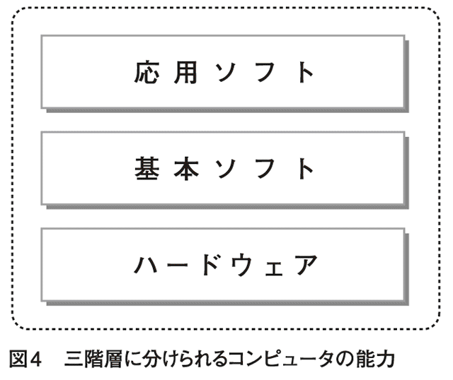
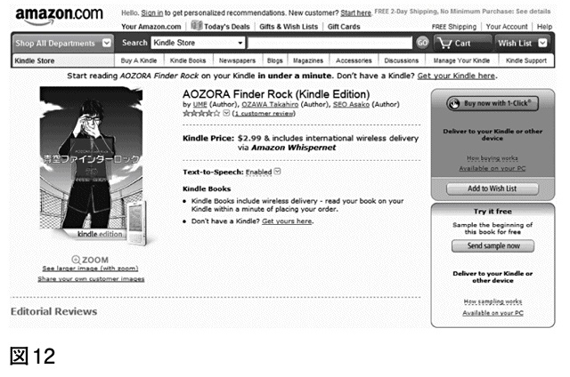
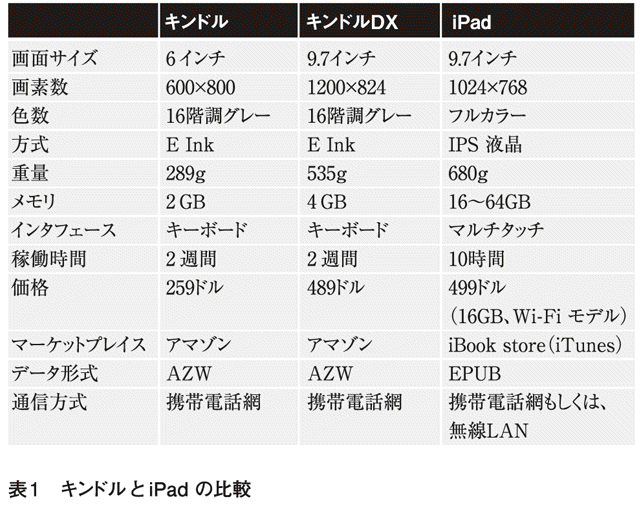

| アップル、グーグル、マイクロソフト～クラウド、携帯端末戦争のゆくえ～ (光文社新書) | |
| 岡嶋 裕史 | |
| 光文社 (2011) | |
まえがき
２０１０年４月にアップルがｉＰａｄを発売します。大きくしただけのｉＰｏｄ？ そうかもしれません。でも、マイクロソフトもスレートＰＣと呼ばれる同種のプレート型端末を提唱し、２０１０年後半に市場に製品を投入します。
彼らは、成功した製品のサイズを少し大きくしてみたとか、競合相手と同種の製品で一儲けしてやろう、といった安易な発想でこれらの製品を開発したわけではありません。
そこには、現在のインターネットについての分析と、未来のインターネットのあるべき姿についての理念があり、その理念が形になったものがｉＰａｄやスレートＰＣなのです。
それでは、彼らが考えるインターネットの現状と将来像とはどんなものでしょうか。
それを一言でくくるのは不可能に近いのですが、彼らの発想に大きな影響を与えているのが、クラウドです。
クラウドは二度、流行語になりました。最初は２００６年、二度目は２００９年です。
最初に登場したときは、それこそ雲をつかむような話でした。コンピュータの運用形態が変わる、企業や家庭に分散していたコンピュータやそのデータをインターネット上に集約する、といった具合の、わかるようなわからないような抽象論のみが語られ、一部の利用者の期待感を煽りつつも、おそらくは誰にとっても実体不明なままブームが終息しました。
そして、２００９年。インターネットの経験則では、軽佻浮薄に感じられた流行語も二度目のブームが訪れれば意味内容もしっかりし、人々の間に定着するものですが、クラウドに関しては未だに実体不明なままです。
３年の間にクラウドをクラウドたらしめる技術が明確化され、クラウドを説明するための言説も洗練されてきました。にもかかわらず、10人に「クラウドとは？」と問いかけると、10の答えが返ってくる状況が続いています。
本書は、ここ数年／これからの数年に企業が実際に市場に投入した／する製品、できるだけ一般利用者でも利用したり購入したりできる製品を取り上げて、その背景に隠されている設計理念やシステム構造を考察していきます。
１章は事前準備です。クラウドを理解するのに避けて通れない二つの概念、仮想化とスケールアウトについて説明し、クラウドの浸透によって引き起こされるハードウェアの軽視や、海外と日本のクラウドの捉え方の違いについて考えていきます。
２章はクラウドの概論です。１章の内容を受けて、クラウドの本質を抽出していきます。クラウドを説明する際によく使われるようになった、「発電所のたとえ」についてもここで言及し、なぜこうした説明が行われるのかを解説します。
また、クラウドによって供給されるサービスは、大きく三つに分類することができます（ハードウェア的基盤、ソフトウェア実行環境、応用ソフトウェア）が、どうしてこういう分け方をするのか、それぞれのサービスはどんなものなのかを実例を交えて紹介します。
すでにクラウドにおける成功企業が誕生しつつありますが、その概観と３章以降に取り上げる企業の選定理由の説明もここで行います。
３章はマイクロソフトがとる戦略の考察です。ウィンドウズアズール、ウィンドウズ、ウィンドウズモバイル、一見すると対象機器のサイズに応じただけで、個別性の高い製品群にも思えるこれらが、彼らの製品戦略のなかでどう位置づけられ、どのような全体像を構成するのか、彼らはクラウドをどうしたいのかを考えていきます。
クラウドの一つ前の世代のシステム構成法であるクライアント／サーバの覇者が、自身の得意領域にどうクラウドを取り込んでいくのかは、多くの利用者にとって興味深い示唆を与えるでしょう。
４章はグーグルがとる戦略の考察です。クラウドの仕掛け人とも、クラウドの水先案内人とも言われるグーグルが、クラウドをどのように捉えているのかを考えます。
興味を惹くのは、グーグルがクラウドについて明確なメッセージを自ら発信する機会の少なさです。まさか寡黙な巨匠作家のように、情報を抑えることで利用者の飢餓感を誘発しているわけでもないでしょうが、彼らはあるときは一般論で、あるときは沈黙でもって答えます。
彼らにとっては、クラウドはあくまでも手段であって、目的ではないように感じられます。それではグーグルが目指すゴールとは何か。彼らが矢継ぎ早に発表したクローム、クロームＯＳ、アンドロイドを軸に議論を進めます。
５章はアップルです。多くの読者が違和感を覚えるでしょう。この企業がクラウドに関わっている、とするのは、あまり支配的な見方ではありません。しかし、水源そのものを持っていなくても、蛇口を支配していれば、それは水源への影響力を持っていると考えてよいでしょう。アップルはクラウドそのものを構築する企業ではありませんが、一般利用者がクラウドを利用する際に使う端末を着々と押さえています。この企業がクラウドの何を担おうとしているのか、何を企んでいるかを見ていきましょう。
６章は日本企業のクラウドに対する姿勢や立ち位置について考えます。クラウドに適応している企業ほど、あまり自社とクラウドのつながりについて語りませんが、日本企業はおしなべてその逆を行っています。日本企業の考えるクラウドと、世界のトップを走っている企業が考えるクラウドの違いについて、理解を深めます。
筆者は、クラウドの戦場において、すでに日本企業は負けつつあると考えていますが、勝ち残るために残された領域、勝つための方法を探ります。
こういう構成を採用したのは、抽象的なことを扱うにしても、取っ掛かりになるモノがあった方が理解しやすいし、普段何気なく使っているモノの、系としての全体像のなかでの位置づけがわかると、そのモノに対する理解も深まると考えたからです。
実際、クラウドはサービスを提供するものですが、「インターネット上の雲」などという曖昧模糊としたものから、人が直接サービスを受け取れるはずもありません。生身の人間がクラウドを使いこなし、そこから便利さや安さ、高速さ、楽しさを享受しようと思えば、手の届く範囲に、確固たる実体が必要です。
最初はそれが、デスクトップ・パソコンだと思われていました。それがいつしか本命はノート・パソコンだと囁かれるようになり、そして、私たちの生活がコンピュータを使ったサービスに依存する割合が大幅に高まり、いつでもそれを使いたいとなると、携行性にすぐれた携帯電話がその地位にふさわしいと脚光を浴びました。
しかし、携帯電話とて唯一無二の正解にはなり得ませんでした。視覚情報に頼りがちな現代社会における機器としては、情報の表示領域が圧倒的に小さいことが、その大きな理由です。その制約に対する一つの回答が、タッチパネル型で筐体の面積をほとんど表示領域として使えるｉＰｈｏｎｅやｉＰｏｄ ｔｏｕｃｈでしたが、それでもできることは限られていました。
そこで、携行性とのぎりぎりの均衡を保ちつつ、表示領域をやや大きくした製品がｉＰａｄやスレートＰＣであり、現代端末戦争の最先端です。これらは、コンピュータ・メーカが場当たり的に製品ラインナップを増やした結果、生まれたわけではなく、クラウドで生産されるサービスを享受するための製品という意味で一貫しています。
クラウドとは、コンピュータがその処理能力を生成・供給する方法の変化のことです。それを受け手の視点から、読み解いていきましょう。
アップル、グーグル、マイクロソフト 目次
１章 クラウドとは
「歩いてた？」
「雲の中を」
──キアヌ・リーブス（A Walk in the Cloudsより）
＊クラウドと「仮想化」
クラウドの評価は難しい。登場してからかなりの時間が経った今も、用いる人によって定義が異なる言葉である。真の革新だと考える人もいるし、言葉だけが独り歩きをして、実は誰にも真の意味が不明な、いつものバズワード（意味の希薄な流行語）だと捉える人もいる。昔からあるグリッド・コンピューティング（複数のコンピュータを連携させて、１台の高性能コンピュータのように振る舞わせる技術。家庭のＰＣの遊休時間などを活用する）やＳａａＳ（後述）の焼き直し、古い酒を新しい革袋に入れ替えただけで、本質的な差異はないという意見も多い。
どれももっともらしく聞こえるのだが、たぶんもやもやとしたクラウドの輪郭を摑むには少しずつ違うのだろう。そうでなければ、これだけ評価が割れたりはしない。
一つ確実なのは、事業者が食指を動かしているクラウドの利点には、仮想化が密接に絡んでいるということである。
〝仮想〟はコンピューティングでよく使われる言葉である。一般に比較的浸透している用語に限っても、仮想記憶や仮想マシンなど、いくつも挙げることができる。
仮想記憶は、コンピュータの主記憶装置（メモリ）を広大に見せかける技術である。コンピュータの中枢機構であるＣＰＵは、演算はできても記憶はできないので、メモリに記憶を依存する。このとき、メモリの容量が演算能力の上限を決めてしまう。多くの処理を行おうとすれば、それに応じたメモリを用意しなければならないが、メモリは値段が高い。
そこで、安価な補助記憶装置（主にハードディスク）を利用する。ＣＰＵは、メモリとしか記憶のやり取りができないが、メモリがあまり使っていない記憶をこっそりハードディスクに待避させてしまう（必要が生じれば、また読み出す）ことで、見かけ上、メモリの量がぐんと増える。これを仮想記憶という。
仮想マシンは、架空のコンピュータを作り出す機能である。身近でイメージしやすいところで、ソニーのゲーム機・プレイステーション３（ＰＳ３）を考えてみよう。ＰＳ３では、初代ＰＳのゲームを楽しむことができる。しかし、ＰＳ３の中に初代ＰＳのＣＰＵや周辺機構が用意されているわけではない。バージョンアップするたびに、ＰＳ、ＰＳ２のチップを足していたら、コストが嵩んでしまう。
そこで、ＰＳ３の機能を使って、架空の初代ＰＳをソフトウェア的に作り出すのである（図１）。
「初代ＰＳのふりをするソフト」などというと、作るのが大変そうである。実際に大変なのだが、ＰＳ３と初代ＰＳの性能差が大きいので、無理なく動かすことができる。
さらに、ふだん使っているパソコンでも、仮想マシン機能は使うことができる。
図２は、マイクロソフトのウィンドウズ上で、仮想マシンを動かしてみたところである。ここでは仮想マシンにもウィンドウズをインストールしたので、ウィンドウズ上で、別のウィンドウズが動いていることになる。
仮想マシンには、色々なオペレーティングシステム（ＯＳ＝様々なアプリケーションを動かすことのできる基本ソフト）がインストール可能なので、ウィンドウズ上で、フリーのＯＳであるリナックスや、異なるバージョンのウィンドウズを動かしたり、リナックス上でウィンドウズを動かすことなどもできる。
また、処理能力が許せば、何台もの仮想マシンを並行して動かすことも可能である。
１台のコンピュータの中で、複数の仮想コンピュータを動かせば、独立した複数のコンピュータのように振る舞わせることができる。そこで、１台のコンピュータで異なるＯＳを同時に動かして比較をしたり、他のコンピュータに影響が及ぶと困る危険な作業を特定の仮想コンピュータ内で行ったりなどができる（建前としては、このとき他の仮想コンピュータに悪影響は生じない）。
こうした作業は、今まで複数のコンピュータがないとできないと思われていた。あるＯＳで確認作業がしたければこっちのマシンを使う、違うＯＳを使いたければそっちのマシンに移動するといった手間がかかったわけだが、仮想化を行うことで機器の移動や構成の変更が柔軟になるのである。
逆に、たくさんのコンピュータが連動して動作しているのに、１台のコンピュータが動作しているかのように見せかけることもできる。この場合は、管理の手間を大きく減じることができる。
ウィンドウズユーザであれば、バーチャルＰＣ（Virtual PC）という仮想マシンが無料で使えるので、一度試してみてもいいと思う。買ってきたウィンドウズには含まれていないが、公式サイトからダウンロードすることができる。なお、仮想マシンにインストールするＯＳは自分で用意する（有償のものであれば買う）必要があるので、念のため。
＊クラウドの重要な一部分である処理機構の仮想化
仮想化はクラウドを構成する重要な要素である。今まで説明してきた仮想化技術の延長線上に位置するものだが、クラウドではこれを極めて大規模に行う。コンピュータだけ、補助記憶装置（ストレージ）だけ、ネットワーク機器だけ、ではなく、コンピュータを形作るもろもろの要素を全部ひとまとめに仮想化してしまう。
自分のパソコンの中に複数のコンピュータがあるように見せかけようとか、ハードディスクがたくさんあって管理が面倒なので１台に見せかけよう、というのではなく、インターネット上に１台の超巨大なコンピュータを構築するイメージである。
そんなことをして何か得があるのか？ もちろん、あるから流行する。この場合は、拡張性（スケーラビリティ）の確保が非常に簡単になる。ここでいう拡張性とは、利用者が気づかないくらい自然に手間をかけずコンピュータの規模や演算能力を大きくしたり、小さくしたりすることを指す。
コンピュータ利用者であれば、自分のマシンの適正な性能は常に気になる。性能が悪ければ仕事が滞るし、良すぎれば無駄なコストがかかる。そこで、適正な性能に関する予測を行うわけだが、どのくらいの能力が要求されるかは環境の変化、特に時系列変化によって大きく変動する。だから、自分にとって必要な能力と実際のマシンの能力をぴったり一致させるのは難しい。
平均値を取れば、仕事のピーク時には性能が足りなくなり、ピーク性能を優先すれば、日常では能力が余りすぎる。
これを解消するために、従来は、よくスケールアップとスケールアウトが行われてきた（図３）。
スケールアップとは、マシンの性能を強化することである。これによって、確かに処理能力は向上するが、いらなくなったからといって、うまく能力を下げることは難しい。スケールアップで向上した能力は、不必要になったときに切り離したり、低下させたりしにくく、常に適切な水準を維持できるわけではない。
次に出てきたのが、スケールアウトである。スケールアウトでは、能力が足りなくなったときに、マシンを強化するのではなく、マシンの台数を増やす。各々のマシンは独立しているので、能力がいらなくなったときには、不必要な台数分を切り離せばよい、という考え方である。
確かに理屈としては、スケールアップより柔軟に処理能力を減らせるのだが、一度買ってしまったマシンを売り払ったり、他に転用したりするのは、言葉で言うほど簡単ではない。
そこで出てくるのが、仮想マシンである。大量のコンピュータを抱えているデータセンタが、仮想マシンを動かす。そして、利用者はデータセンタの仮想マシンを借りるのである（図４）。
この借り方は、非常に柔軟性があり、かなり自由に台数や処理能力を増減できる。面倒な手続きを経ずに、「ＣＰＵ使用率が80％を超えたので、仮想マシンを自動的にスケールアウトする」といったことが行われている。
発想としては、従来のスケールアウトと同じなのだが、物理的な筐体を伴う本物のマシンをスケールアウトするのと、ソフトウェアとして動いている仮想マシンをスケールアウトするのとでは、作業の容易さがまったく異なる。
こうした特性は、たくさんのコンピュータを抱えているほど活かしやすくなるので、多くの企業が、自社でコンピュータを保有する形態から、データセンタから演算能力を借りる形態へと移行しているのである。もちろん、自社内でマシンを仮想化して、スケールアウトの利点を享受することも可能ではあるが、規模の点でメガデータセンタには太刀打ちできない。
＊大規模ＩＴ企業がデータセンタ化する
この流れを受けて、そもそも大量のコンピュータを抱えている企業が、データセンタを運営するケースが増えている。グーグル、マイクロソフト、アマゾンなどが代表例だ。これらの企業は、従来から極めて多くのコンピュータを運用している。それこそ、業務閑散期にはかなりの処理能力を使わずに眠らせているわけで、それを有効活用するのにデータセンタは非常に都合がいい。
多国籍展開も行っているので、各国にデータセンタを分散させることも容易だ。大災害や特定国の政治環境・経済環境のリスクに、自社業務が左右されることも少なくなる。実際、後述するように、こうしたメガデータセンタを運用する企業は、個々のデータセンタや個々のマシンにあまりこだわらなくなっている。
仮想化が進んでいるので、マシンが壊れれば別のマシンに処理を引き継ぐこともできるし、あるデータセンタが壊滅すれば、別のデータセンタで業務を続行するのである。クラウドの定義は色々あるが、彼らがクラウドという用語を使う場合、こうした位置透過性（どこで処理しても同じ。むしろこだわらない方が業務継続に有利だとする思想）を多分に含んだ意味で使うことが多い。
また、これらの企業群は、自社でソフトウェアやサービスを提供している。当然、データセンタを運用する上では、単なるコンピュータの処理能力の貸し出しではなく、ソフトウェアやサービスを提供することも視野に入れているので、彼らにとっては新たな収入経路が増えることになる。
加えて、自社コンピュータ上で顧客が業務を行うので、各種の統計をダイレクトに取得することができる。自社ソフトウェア、自社サービスを強化するのにこれほど強力な情報源はない。大規模ＩＴ企業は、顧客企業のコンピュータも業務の流れも握ることができるのだ。
＊日本のデータセンタとの比較
「データセンタ」に限定するならば、日本にも多数のデータセンタがある。経営状態も良好で、今から新規にデータセンタと契約を結ぶのはなかなか難しいほどだ。だが、これを取り上げて、日本のデータセンタ化が米国並みである、あるいはクラウドに対応していると考えるのは危険である。
まず日本のデータセンタは規模が小さい。最も大きなものでも、グーグルやマイクロソフトが運営するデータセンタの数十分の一～数百分の一規模である。
今後、後述するグーグルアップエンジン（Google App Engine）やウィンドウズアズール（Windows Azure）などの本格的なクラウドサービスが投入されたとき、価格面でも機能面でも大きな格差が生じるのは必至である。
データセンタの運用形態も大きく異なる。日本のデータセンタは未だに、ハウジングサービスを提供しているところが多い。ハウジングサービス（コロケーションサービスとも言う）とは、顧客が買ったコンピュータをデータセンタの良好な環境で預かるサービスである（図５）。
コンピュータの運用には、電源、通信、冷却、災害など、適切な対応を施さなければならない要素が多数ある。データセンタであれば、大量のコンピュータを預かるので、１台あたりの経費が少なくなる寸法だ。
もちろん、この方法にもメリットはある。何せ自前のコンピュータだから、どれだけ自社独自の変更や改造を施しても誰も文句を言わない。好きなようにシステムを組み込み、作り替えることができる。かゆいところに手が届く、というやつである。
これに比べると、世界的な潮流になっているメガデータセンタとそこで提供されるクラウド・コンピューティングのサービスは、よくも悪くも画一的である。もちろん、自社に合わせた変更は可能だが、限度はある。
しかし、世界的に標準化の流れが加速し、できるだけ同じ業務プロセスで、同じ技術標準を使い、あらゆるサービスを結合して新たな価値を創造することが求められる現代では、かゆいところに手が届いたり、自分の思い通りに作り上げたシステムが最善だとは必ずしも言えない。
ＥＲＰ（Enterprise Resource Planning：経営資源計画。経営の効率化を図るための、体系的な手法。全社的な観点から、人やモノや情報を最適に配置する）の導入などでもよく言及されるように、今は、標準化された手順や技術に自社業務を適合・再構築することが求められている。そうであるならば、メガデータセンタの画一性はむしろ利点として機能し、日本型のハウジングサービスのメリットは相殺されることになる。
＊野ざらしのデータセンタ
日本のデータセンタが高コスト体質なのは、規模が小さいことだけが原因ではない。華美で豪奢な設備にも一因がある。
図６は日本の典型的なデータセンタである。重厚な防壁に身を包み、完璧な空調、電源設備、免震構造を持ち、24時間体制で監視員が常駐する。顧客の大切なサーバを預かる以上、こうした設備を備えるのは肯けるが、それ故に莫大なコストが生じている。
立地条件もよい。日本の〝データセンタ銀座〟は、東京のお台場である。有事の際に、顧客である大企業の本社から、エンジニアが30分で駆けつけられる（大災害時に業務を継続することを考慮するなら、むしろ同時被災を避けるために、遠隔地に設置すべきなのだが）ことが重視された結果というが、土地代だけでもかなりの費用が上乗せされている。
一方、図７はベルギーにあるグーグルのデータセンタである。コンテナに多数のサーバが格納される、いわゆるコンテナ型データセンタと呼ばれるものだが、なんと野ざらしである。コンテナ上部は雨で濡れている。
コンテナには、無停電電源装置、免震機構などが備わっているが、すべて無人運転である。エンジニアがメンテナンスに訪れるのは、非公表だが月に数回と言われている。恐ろしいほどの数のサーバが収納されているので、一日に何件もの故障が発生しているはずだが、基本的に修理はしない。壊れたものは破棄され、自動的にフレッシュな機器に動作が引き継がれる。
さらに驚くことに、このコンテナは情報機器には必須と考えられていた空調設備すら備えていない。「もし熱くなって稼働率が落ちてきたら、しばらくは別の国のデータセンタに処理を切り替える」のだそうだ。
「グーグルで２回検索すると、コーヒー１杯分のお湯を沸かすのと同じだけCO2を発生させる」と批判されているとはいえ、ここまで省電力、コスト減を徹底する姿勢は凄まじい。
設置場所も僻地や寒冷地が選ばれることが多い。ほとんど人が訪れないのであれば、特に問題も生じない。立地に起因する問題があれば、コンテナごと引っ越すこともできる。総じて言えば、金をかける意思がない。クラウドサービスの提供において、ハードウェアなどというものは単なる汎用品であり、置換可能な消耗品である。端的に言って、クラウドの牽引者たちはハードウェアなどどうでもいいと思っている。
＊ハードウェア軽視思想
クラウドのベースにあるのは、こうしたハードウェアの地位低下である。ハードウェアはすでに神棚に飾っておく類の貴重品ではなくなり、ハードウェアからのアウトプットを享受するための通信回線も潤沢に整備された。手元にハードウェアを置いたり、自社資産としてハードウェアを計上する必要すら希薄になっているのである。
汎用品化と標準化が進むと、所有する意味が失われていく。ハードウェアの運用は、運用して利益が出せるような超大規模組織に任せておけばよい。一般の、すなわちほとんどの利用者は、そうした組織がハードウェアを運用して提供するサービスだけを享受すればよい。
クラウドを理解する際に、こうしたハードウェア軽視思想をのみ込んでおくことは重要である。類型的なクラウド批判に、「どこで演算処理がなされ、どこにデータが格納されているのかわからないサービスなど、危なくて使えない」というものがあるが、演算処理や記憶保持がどこで行われているのかわからない（追跡不能という意味ではない。動的に変更される可能性があるということだ）ということは、クラウドの利点を引き出す重要な要素である。
■ １章のまとめ
ハードウェアにこだわりを持たず、その時点で最適な場所やシステムで演算を行うことが高効率のサービス提供を可能にする。特定の場所とハードウェアというものに拘泥するなら、日本的なデータセンタの形態しか生み出せない。
そして、メガデータセンタを基盤とするクラウドサービスが世界をのみ込もうとしている。これらのサービスは、ここまで述べてきた特徴をダイレクトに保有している。つまり、どこで産み出されているかはわからないが、どこででも受け取ることができる。おそらく、これがクラウドの本質である。その結果として、非常識なほどの安さと相互接続性、技術進化の速度が利用者にもたらされる。
２章 クラウドの古さと新しさと主要企業
「世界中のコンピュータ市場の規模は、５台くらいだろう」
──トーマス・ワトソン
（ＩＢＭ創業者、１９４３年の発言とされるも真偽不明）
＊クラウドは言われているほど新しいのか
それでは、クラウドというのは新しいのだろうか。インターネットが登場したときほどのインパクトを我々にもたらすのだろうか。
実は利用者の視点で考えれば、クラウドが実現しようとしていることは決して新しくないと思う。自前で作っていた何かが仮想化されて、成果物だけを購入できるようになるのはごくふつうのことだからである。
たとえば、食べ物である。食べ物の生産の初期においては、自給自足で畑を作り、家畜を飼い、井戸を掘っていた。これは決して楽な作業ではない。
畑を耕すのも、家畜の世話をするのも、井戸から水をくむのも、すべて自分の仕事であり、自分の責任で行わなければならない。こうした作業が恒常的に発生するわけである。
また、不作で収穫ができなかったり、家畜が逃げてしまったり、井戸が涸れたりしたら、即飢え死ににつながる可能性もある。シンプルだが、コストとリスクの大きい方法なのである。
したがって、時代が進むと、自給自足は一般的に行われなくなる。何を作るときでもそうだが、規模の経済の威力は大きいので、大規模な食料生産設備を持つ事業者が現れ、自給自足に比べると低価格で、良質な食べ物を供給するようになる。我々はそれを商品として購入するのである。
電気にしてもそうだ。以前は電気を使いたければ、自分で電気を作らなければならなかった。発電機を買い込み、燃料を焚いて電力を得る。その電力を自ら消費する。
発電機は高価な機材である。メンテナンスも大変だし、技術の進歩も速い。せっかく買った発電機がすぐに時代遅れのものになってしまうケースはざらだし、電力を使っていない時間は放置しておくのももったいない話である。
そこで、発電所という発想が出てくる。電力はたくさんまとめて作った方が効率的だし、顧客が大勢いればいろいろな時間帯に電力が消費されるので、発電機を無駄に寝かせておくこともなくなる。もちろん、供給される電力は形式が厳密に定められており、「うちの会社だけ２００ボルト、60ヘルツの電力を供給してほしい」といったわがままは通らなくなるものの、費用を削減できる効果の方が大きい。
一般利用者は、自給自足するより専門の人に大規模に作ってもらって、その成果物を購入する方が得だというのは、かなり普遍的な現象である。
もちろん、なんでもかんでもまとめて作ればいいわけではない。この場合、利用者は購入の形で商品を手に入れるため、貨幣経済が発達していなければならない。また、商品が運搬性に優れている必要もある。生産が大規模であればあるほど、競争上優位だとすれば、その商品の生産地が消費地から離れることは当然、織り込んでおかなければならない。作ったその場で消費しなければならないような商品は、残念ながらこの恩恵を受けることはできない。
食料であれば、保存のきくものに関して、あるいは保存技術の向上、物流の整備などを待って、はじめてこの生産形態をとれるようになる。
＊標準化と仮想化
このとき、標準化と仮想化ができるほど、まとめて作る効果は大きくなる。
一般的に、標準化と仮想化は工業製品の方がやりやすい。たとえば、ネジは多くの工業製品で使われるパーツである。単純なパーツなので、自前で作るのも面倒ではないが、それだからこそ自前で作るよりも、ネジ屋がまとめて作った方が効率的である。
しかし、ネジを必要としている工場が、ばらばらのネジを欲しがっていたら、まとめて作る工程を確立しにくい。それぞれオーダーメイドになってしまうからだ。大きい、小さいくらいの別はあるにしても、何種類かのネジをレディメイドで作っておける状況を構築したいのである。
そこで行われるのが標準化である。業界的にみて、あるいは地域的にみて、ネジの種類はこれとこれしかない、と決められればネジ屋の負担は極端に減る。世界的な取り決め（世界標準）であればなおよい。
仮想化とは、誰が作った商品かを隠蔽するテクニックである。たとえば、井戸を掘って水を入手していたとき、水を生み出す装置は井戸であり、その井戸は自分や家に所属している。そこから生産された水は、強く自分に結びついている。
井戸が涸れたり、井戸から水をくむのが面倒になって、大きな水源の一角を使う権利を入手したときはどうだろう。このときも、水源自体は大きいが、その一角が自分に帰属しているので、自分と水源との関係は１対１である。その一角がダメージを被ったら、自宅の庭に井戸があったころと同様、家族は水不足で苦しむことになる。
そうした事態に保険をかけるために仮想化が行われる。水源には供給能力が十分にあり、契約している利用者すべてに水を供給する能力がある。でも、部分的には水が出なかったり、汚染されたりする可能性があるかもしれない。そこで、どの場所の水がどの家庭に配られるかはわからない仕組みにするのである（図１）。
この供給方法は、メリットが大きい。１人１人の利用者にとっては、必ずしも最適解ではないかもしれないが、社会全体を見渡したときになんらかの事物を非常に効率的に供給することができる。
＊「ご指名制」をなくす
クラウドモデルとは、換言すれば「ご指名制」をなくそうという試みである。
水を配るとき、「どの水でもいい」、「どこで採れた水かなんて知ったことか」と利用者が考えていれば、クラウドモデルを適用することで水のコストを最小化できる。
しかし、「ヘの六番の井戸で採れた水がいい」、「いや、ホの十二番の水がうまい」などと言い出す利用者が多い場合は、クラウドモデルの導入は無理である。
クラウドは、どこで採れた水かを隠蔽することで、供給を最適化する。クラウド側も同じ水を配れるように努力する。そこに、「俺にはヘの六番の水をくれ」と「ご指名」が入ってしまうと、前提が崩れることになる。
もちろん、どんな事物も、完全なクラウドや完全なご指名制で供給が成り立つわけではない。水の供給はかなりのレベルでクラウドモデルだが、「やっぱりエビアンが飲みたい。水道水の１０００倍の料金を払ってもいい」という人もたくさんいるため、ボトルドウォーター市場などが成立する。
農作物はあまりクラウドモデルに向いているとは言えないが、「どこで作られていようが、農薬漬けになっていようが知らん。とにかく、葉っぱが食べたい」と思えば、クラウドっぽく入手することも可能である。工業製品に比べれば品質はまちまちだが、落命するほど危険なものはあまり売っていない。サービスの最低水準は守られていると言える。
では、コンピュータはどうだろうか。
コンピュータが生み出すサービスは、電力よりは複雑だが、総論としては標準化・仮想化しやすい。したがって、コンピュータ技術をデザインする立場にある人が、クラウドを志向するのは必然であるとも言える。本質的にクラウドに向いているのだ。
＊自給自足してきたわけ
クラウドに向いているのに、今まで自給自足をしてきたのにはわけがある。
まず、物流に乗りにくかったこと。コンピュータサービスにとって、物流とは主に通信である。しかも、それは世界規模でなければならない。しかし、これを担うインターネットは、安価だが信頼性が低く、通信速度も不十分だった。ＣＰＵやハードディスクの能力の伸びに比べると、ネットワークの速度向上はこの10年間で１００倍程度にしかなっておらず、利用者の体感としては技術進歩の遅い分野である。
今でもその傾向は残っているし、インターネットがインターネットである限り変わらないだろうが（これはインターネットの本質に関わる特性なので、そこを根本から変えようとするとインターネットでなくなってしまう）、信頼性や通信速度を保証するサービスが整ってきた。これは、クラウド化に必要な要件である。
次に、ハードウェア製造業の影響力が非常に強かったことである。
彼らは、各企業、各家庭でコンピュータの演算能力を生み出す源泉である機器──パソコン、サーバ・コンピュータなどを生産している。現在、そして未来もここから収益を上げるためには、企業や家庭でコンピュータの演算能力を生み出す必要がある状態が望ましい。それはすなわち、ここまでの文脈で言えば、コンピュータの演算能力ができるだけ無駄になる状態である。
１人の人間が数台の強力なパソコンを持つ状況などは理想的である（図２）。すべてにウィンドウズがインストールされ、せっかくの演算能力は自分の使いたいソフトやサービスよりも、まずウィンドウズによって消費される。利用者はもっと強力なコンピュータを求め、ＣＰＵのコア数（実際に演算を行う部分。近年では１個のＣＰＵが複数のコアを持っている）やクロック数（動作周波数。高いほど単位時間あたりの計算回数が増える）は際限なく上がっていく。そうすると、ＯＳはまた追加機能を盛り込むことができる。
もちろん、それは悪意があってのことではなく、利用者により高度で、より使い勝手のよいコンピュータを提供するための企業努力の賜物だが、利用者はそれに追いつくために常に機器やＯＳの買い換えに奔走してきたこともまた事実である。
ハードウェアの製造者にとっては、この状況を演出し続けることができれば、今後も収益は約束されるだろう。そういうビジネスモデルを何十年もかけて作り上げてきたのである。
しかし、ネットワークの進歩により、コンピュータサービスを集中して生産・供給する企業が現れてきた。ここにサービスの生産を任せれば、それはより効率的になり、ＯＳやアプリケーションをアップデートし続ける手間から解放される。
ハードウェアは壊れるものだし、長期間使わないこともある。私たちが真に必要としているものはサービスであり、ハードウェアのメンテナンスやＯＳの導入に血道を上げたいわけではない。サービスの供給を高度に効率化しようと考えれば、その形態は必然的にクラウドに至る（図３）。
＊「どう組み合わせるか」が問われる
ただし、利用者自身がこの形態を受け入れるかどうかは別問題である。演算能力は手元に置いたコンピュータで自給自足するもの、という固定観念は何十年もかけて強固に作り上げられ、前頭葉に刷り込まれてきた。農産物や電力が集約生産に向かったときに、自給自足したいと願った人がいたように、演算能力もまた手元に残しておきたいという利用者は多数に上るだろう。
この問題は意外に根が深い。状況が変わるのは、ネットネイティブと呼ばれる、物心ついた頃からインターネットが存在していた世代、すなわち、演算能力の所有にこだわらないコンピュータ利用方法で育った世代が台頭するときを待たなければならないかもしれない。
それはたとえば、ＣＤを買ってきても、ハードディスクにその情報を取り込んでしまえば、ＣＤ自体の所有には意味を見いださずにすぐ売却してしまうのが当たり前の世代である。
今まで自給自足が絶対だった事物を他者の供給に頼る、という決断は、それほどまでに勇気を要するものである。
また、効率的だからといって、必ずしもそれが社会にとっての最適解でない場合もある。生産効率からいえば輸入に頼った方がいい食料分野において、自給率に拘泥するのも、流通が絶たれたらという恐怖が存在するからである。
コンピュータのサービスも、ネットワークが絶たれればストップするリスクがある。このリスクが現実にある以上、企業が必要不可欠で止めることのできない最重要業務をクラウドへ完全移行するのを躊躇するのは当然である。かといって、１００％の自給率を維持するのもコストや技術キャッチアップにおいてリスクがある。
だから、現実的にはどちらを採るか、ではなく、どう組み合わせてリスクを軽減するかが問われることになるだろう。
＊各社のクラウド戦略
こうした技術環境の移り変わりを受けて、コンピュータの演算能力は自給自足で作るもの、という幻想を共有していた時代のメーカも、ビジネスモデルの転換を迫られ始めている。
彼らにしても、さすがに「今後も演算能力は自給自足であり続ける」と主張するのには限界が見えてきた。
企業や個人に発電機を売っていたメーカが、供給体制の変化を受けて、販売先を発電所に替えたり、自分自身が発電所を経営したように、コンピュータのメーカも演算能力の発電所を志向し始めた。
ただし、演算能力の供給は電力ほどにはシンプルではない。コンピュータの能力は階層構造を成しており、どの層でサービスを提供すればヘゲモニー（覇権）を握れるのか（もっと端的にいえば利潤を得られるのか）、に関して、激烈な競争と試行錯誤が行われている。その試行錯誤の中で、史上稀にみるほどやっかいなテクニカルタームが生み出された。
それは、ＳａａＳ（サース）、ＰａａＳ（パース）、ＩａａＳ（イアース）である。
ＩＴ関連の３文字略語は悪名が高い。業界にどっぷりつかっている人間ですら、よく理解できなかったり、同じ略語で意味がダブっているものすらある。しかし、この３語はその中でも極めつきであろう。センスのなさも紛らわしさも最上級である。
生き残り競争が激化した結果、このような無残な言葉が生まれたわけだが、メーカのクラウドへの取り組みを知る上では、必要な知識でもある。少しお付き合いいただいて、詳しく見ていこう。
 ＳａａＳ、ＰａａＳ、ＩａａＳは、クラウドによって、コンピュータのどの部分の能力を供給するかという一点において差別化できる。他に相違点はない。そして、コンピュータの能力は概ね、図４のように階層化して考えることができる。
私たちがパソコンを買ってきてセットアップするときも、この階層をそれぞれ作り上げている。ドスブイ（ＤＯＳ／Ｖ）機というハードウェアに、ウィンドウズという基本ソフトをインストールし、ウィンドウズ上でワードなどの応用ソフトを動作させるわけだ。応用ソフトはアプリケーションとも呼ぶ。
この分類はもっと細分化することもある。ハードウェアをＣＰＵとストレージ（補助記憶装置）に分けたり、基本ソフトもＯＳとデータベースなどのミドルウェアに分ける場合がある。しかし、基本はこの三階層だと考えて差し支えない。
先ほどのＳａａＳ、ＰａａＳ、ＩａａＳは、この三階層のどの部分を担うかを表している（図５）。
まず、ＩａａＳ（インフラストラクチャ・アズ・ア・サービス。ＨａａＳ＝ハードウェア・アズ・ア・サービスと呼ぶこともある）であれば、ＩａａＳ事業者（ＩａａＳプロバイダ）が、ハードウェアをサービスとして提供する。
利用者は、ＩａａＳ事業者から得られる仮想的なハードウェア上に、ＯＳやアプリケーションをインストールして、自分の業務を行う。この場合、ＯＳやアプリケーションは自前になるので、好みのものが使えるという自由度が高い半面、クラウドの恩恵を受けられるのはハードウェア部分だけになる。
次に、ＰａａＳ（プラットフォーム・アズ・ア・サービス）では、事業者はプラットフォームをサービスとして提供する。ここでいうプラットフォームとは、何かの実行環境のことである。アプリケーションを実行するのであればＯＳがプラットフォームになる。また、新しいところでは、マーケットプレイスもプラットフォームとして考えることができる。
マーケットプレイスとは、誰かが何かを売りたいときに、決済手段や物流、商品展示の場などを提供するサービスである。例としては、楽天市場が挙げられる。一般的にこれらは個人や中小規模の企業では構築しにくく、仮に構築できたとしても、かかった手間と費用に見合う効果を生み出すのが難しい。
そのため、今後はＯＳに準ずる基本的な機能として、マーケットプレイスのプラットフォーム化が進むだろう。
利用者がＰａａＳサービスを受ける場合、プラットフォーム機能（たとえばＯＳ）はすべて事業者側で用意され、利用者はその結果を受け取るだけになる。利用者側にはＯＳの実体は存在しない。しかし、アプリケーションは自前で用意する必要がある。
最後のＳａａＳ（ソフトウェア・アズ・ア・サービス、感染症のＳＡＲＳと区別するためにサースと発音することが多い）では、事業者が提供するのは、アプリケーションソフトの実行結果そのものである。コンピュータを構成する階層のうち、ハードウェアも、基本ソフトも、応用ソフトも事業者側が用意するため、利用者の所有する部分がもっとも小さくなる。
注意すべきは、どの形式にも一長一短がある、ということである。ポイントとなるのは、提供されるサービスが自分の欲しているものと合致するかどうかである。
＊それぞれのメリット、デメリット
近年の潮流の中でハードウェアが軽視されたのは、ハードウェアが汎用品であるからだ。一般的なコンピュータは、演算能力を必要とする業務において、およそどんな用途にも適用することができる。したがって、ＩａａＳにハズレは少ない。特殊なハードウェアを欲しているケースをのぞけば、ＩａａＳサービスを受けて、自社にはまったく合致しなかったという事態には遭わずにすむだろう。
しかし、基本ソフトと応用ソフトは自前で用意する必要があるため、この部分においてクラウドモデルの利点を享受することはない。
ＯＳはどうだろう。
ＯＳはかなりの水準で汎用品だが、まだ、たとえばユニックスには可能だがウィンドウズでは無理なこと、あるいはその逆が存在する。また、携帯電話や情報家電などに組み込まれるＯＳ（組み込みＯＳ、単機能ＯＳ）でできることは限定的である。したがって、ハードウェアと比較すれば汎用性は低い。
ＰａａＳはこの部分をサービスとして提供するため、自社の状況に合う合わないの別が出てくる。「ウィンドウズパソコンを多用しているので、それをクラウドサービスで置換しようとしたが、接触したＰａａＳ事業者はユニックスプラットフォームしか提供していなかった」というケースである。
この場合、現在の自社業務をその事業者のサービスで置換することはできない。別のＰａａＳ事業者を探すか、自社のプラットフォーム戦略をユニックスを使うように転換する必要があるだろう。
一方で、もしもＰａａＳ事業者が提供するサービスが自社の欲しているサービスに合致する場合は、ハードウェアも基本ソフトも手放すことができる。これらの容量計算やメンテナンスから解放されるわけである。
アプリケーションはどうだろうか。
アプリケーションは業務ごと、好みごとに存在すると言っても過言ではない。アプリケーションの生み出す結果は、そのまま業務に直結するため、同じ分野だから同じアプリケーションが使えるというほど単純ではない。
たとえば、音楽制作の現場においては、キューベース（Cubase）を使う人も、ソナー（SONAR）を使う人もいる。どちらもスタジオ録音ソフトとしてできることはほぼ一緒だが、使い勝手が仕事の生産性に直結するだけに、利用者のこだわりが強い。ＯＳならウィンドウズ、というほどには標準化されないのである。
一方で、アプリケーションまでをサービスとして受け取ることができれば、クラウドの便益を最大限に享受しているとも言える。ハードウェアも基本ソフトも応用ソフトも、すべてが事業者の所有であるため、これらが時代遅れになったときのアップデートの責任も事業者に帰する。自社で手当する必要がないのである。
もちろん、その作業費用はクラウドの利用料金に上乗せされるが、規模の経済が働くため、自社でこれを賄う手間と費用を考えれば、ほとんどの場合、劇的なコスト減をもたらす。
さらに、情報システムを使う企業は、業務そのものを見直して標準化すべきだとする世界的な圧力への対応も考えなければならない。特に日本企業で顕著なのが、紙の時代の業務のやり方に適合するアプリケーションを作り上げてきたことである。ＩＴがなかった頃の仕事の流儀を活かせるように、アプリケーションも特注品を作ったのである。
この特注アプリケーションは実によく働いたが、各社の流儀（わがままとも言う）がそのまま残るという結果をも生んだ。業務環境の無国籍化や水平・垂直分業が加速する中で、こうした自社ルールのメリットよりもデメリットの方が目立ってきたのである。
そこで、ＳａａＳを積極的に利用しろ、という話になる。
ＳａａＳで提供されるサービスは、画一的なものである。だが、その画一さを受け入れることで、自社業務がグローバルスタンダードに準拠し、他社との連携が容易になるのである。それには、業務改革をともなう各種の作業が発生するが、その中で業務の不合理や非効率が是正される、というわけである。
＊ＳａａＳ、ＰａａＳ、ＩａａＳの主要企業
では、私たちは、どのサービスを受け入れるべきだろうか。どの事業者も自分のサービスがよいと主張して譲らない（もっとも、それが本当にいいと思っているかどうかは別で、自社の既存製品、既存技術を活かせる層を選択しているに過ぎない）。
どこまでを自社で賄い、どこからをクラウド供給に頼るのかは、先にも述べたように各企業が自社の立ち位置を踏まえた上で、その組み合わせを考えるべき問題である。したがって、どの事業者も共存できるはずであり、それぞれに個性的な企業が存在する。
まず、ＩａａＳの主要企業は、意外にもアマゾンである。ＩａａＳはコンピュータそのものを、ＳａａＳはコンピュータを使ったサービスを提供するので、生活感覚から言えばＳａａＳがより私たちに近く、ＩａａＳは遠い。これは、携帯電話のキャリア（通信事業者）やそこが行っているサービスはよく知っているけれども、携帯電話の中身を構成している部品メーカはよく知らない、という感覚に近い。
アマゾンは小売りという、日常に密接したサービスを行っている企業であるため、クラウドを提供する場合も日常に近い形式を、すなわちＳａａＳを選択しそうである。
しかし、アマゾンの主要なクラウド商品であるＥＣ２（Amazon Elastic Compute Cloud：コンピュータ機能を提供する）や、Ｓ３（Amazon Simple Storage Service：記憶機能を提供する）は、アマゾンがコンピュータやハードディスクを貸してくれるイメージである。したがって、それだけではコンピュータサービスは行われず、自分でその上にＯＳやアプリケーションを展開する必要がある。
アマゾンにしてみれば、彼らの主要なミッションはあくまでも小売りサイトの構築と運用であり、そこで空きが出るコンピュータの演算能力や記憶装置などを効率的に利益に結びつける仕組み、あるいは、アフィリエイト・プログラム（ホームページなどである商品の広告に協力し、そのホームページ経由で商品が購入されると、報酬が支払われる仕組み）などで、世界中にアマゾンの支店や広告塔を作ってくれている利用者の利便性や可用性（システムの壊れにくさ）を向上させられる仕組みがあればそれでよいわけである。
したがって、（少なくとも初期段階では）自分たちにとって、より追加コストのかからないＩａａＳの形式を採用していると思われる。
ＰａａＳは競争の激しい分野である。各形態の汎用性を考えれば、ＩａａＳ＞ＰａａＳ＞＞ＳａａＳの順になる。後者になるほどより便利に、よりお手軽になるが、便利で手軽ということはよく作り込まれていることを意味し、作り込まれる過程で仕組みに合わない利用者が退出していく。
とはいっても、パソコンで言えばＯＳのレベルで何か特殊なことがしたい、自社が独自に作ったＯＳでなければ業務が動かないという利用者は少数である。ＰａａＳのパイはＩａａＳ同様に大きい。ここでは当然ながら、ＯＳを牛耳っていた企業がしのぎを削る。
現在ＰａａＳにおいて最も注目されている企業は、間違いなくマイクロソフトだろう。パーソナルコンピュータの分野で基本ソフトの覇権を握ったマイクロソフトが、クラウドコンピューティングでも基本ソフトに該当するプラットフォームの部分で覇権を握るのか、あるいは握ることに意味があるのかは、大きな興味の的である。
マイクロソフトはすでにクラウド用ＯＳのウィンドウズアズール（Windows Azure）を発表し、サービスに入っている。基本的な料金は、１台の仮想マシンを１時間借りたときに11・76円。これを高いと思うか安いと思うかは、利用者が置かれた状況によるが、必要に応じて即座にマシンを増減できる点も含めてコストの評価をする必要があるだろう。
グーグルもすでにクラウド用ＯＳのクローム（Chrome）を市場投入することを発表している。発表当初は、パソコンＯＳの分野でウィンドウズに対抗するのでは？ と囁かれていたクロームだが、そのスペックは明らかにクラウドでの利用を前提としている。
ただし、グーグルは、クロームに限定したクラウドサービスを提供するとは表明していない。したがって、クロームが市場に投入されても、初期の段階では小さく、動作が軽快で、セキュリティが強固な（そして、できることが限定的な）ＯＳとしてしか認知されないかもしれない。
ＳａａＳはサービスを提供する事業者が乱立していると言って差し支えない状況である。汎用性の高いＩａａＳ、ＰａａＳに比べると、マーケティングサービス、給与計算サービスという具合に対象が絞り込まれるので、それぞれの企業が得意分野を主張して多彩なサービスを展開している。
これは、ＯＳを提供する企業は少ないけれども、アプリケーションソフトを提供する企業は星の数ほどあることを想起すればわかりやすい。
少し考えただけでも、顧客関係強化や営業力強化のサービスを提供するセールスフォースドットコム、ワープロや表計算、スケジュール管理など、従来のマイクロソフト・オフィス製品相当のグーグルアップス（Google Apps）、楽曲販売を中心にオーディオブックやソフトウェアなども購入できるマーケットプレイスのｉＴｕｎｅｓなどを挙げることができる。
＊本書で取り上げる事例
本書では、次章以降で解説する主要なクラウドサービスとして、マイクロソフトのウィンドウズアズール、グーグルのグーグルアップエンジン（Google App Engine）、アップルのｉＴｕｎｅｓを取り上げた。
この三つを選択したのは、先の分類で言うと主にＰａａＳに言及したかったからである。ＳａａＳはいかにもクラウド的だが、提供されるサービスが細分化されるため、クラウドの支配的企業がここから登場するのは困難と思われる。
一方、ＩａａＳは最も基本の部分を押さえているわけだが、世の中の大多数の企業はプラットフォームを自分で作ったり、運用したりする能力や必要性がないため、多くの利用者を集めることは難しい。ここもクラウドで最終勝利を収める企業の戦場ではない。
汎用的、かつ最大の利用者を集め、クラウドの喉元を押さえる、という意味で注目されるのは、ＰａａＳの部分である。このカテゴリで生き残った者が、クライアント／サーバ（３章で詳述）時代のマイクロソフトのように、一時代の覇者になる権利を手にするだろう。それは、多くのＩａａＳ企業、ＳａａＳ企業が、最終的にはＰａａＳへ移行する戦略を持っていたり、ＰａａＳ企業と協業する方向性を模索していることからも傍証できる。
＊ｉＴｕｎｅｓ、ウィンドウズアズール、グーグルアップエンジン
ｉＴｕｎｅｓは、単体として捉えれば楽曲管理ソフトだが、マーケットプレイスとしての機能に着目した。伝統的な分類方法から見れば、マーケットプレイスはＳａａＳに分類されるだろう。しかし、すでに触れたように、今後インターネット上での情報の流通と決済を行う重要な基盤になると考えられるため、本書では敢えてＰａａＳとして分類した。
クラウドの先進事例として必ず取り上げられるのは、アマゾンのＥＣ２、Ｓ３とグーグルのグーグルアップスだが、アマゾンのＥＣ２、Ｓ３はＩａａＳ、グーグルのグーグルアップスはＳａａＳであるため、本書では触れない。
なお、現時点でアマゾンは、ＥＣ２、Ｓ３をＰａａＳへと移行させつつあることを附言しておく。
マイクロソフトのウィンドウズアズールは名前の通りウィンドウズの派生製品である。クラウド時代になっても、コンピュータの根幹を掌握するのは自分たちだ、という主張だと読み替えてもよい。
グーグルのグーグルアップエンジンは、クラウド上でソフトウェアを実行させるための仕組みである。クライアント／サーバ時代の遺物であり、根底部分でその思想を継承しているウィンドウズがどれほどのものか、クラウド由来の技術とはこういうものだと、挑発するかのような製品である。
アップルはあくまでもマイペースだ。ｉＴｕｎｅｓは別に次の覇権を取りに行く製品ではない。ただ、最小の努力で最大の利益を狙ってはいる。マイクロソフトとグーグルが次の盟主の座をかけた総力戦で疲弊すれば、いつの間にかコンテンツ流通や課金システムの果実はアップルが齧ってしまうかもしれない。
＊新たな戦場に過ぎない
個別の企業やサービスの話を始める前に一つ述べておくが、コンピュータの利用形態がクライアント／サーバからクラウドへ変わるとして、その先にオープンな世界が待っているわけではない。この点は誤解されることが多いので、注意が必要である。
パラダイムシフトが起こるときには、いつもユートピア思想が語られるが、本当にユートピアが形成されたことはない。
環境条件の変化に起因して、ハードウェアで囲い込めなくなったから、ＯＳで囲い込もうとしたように、企業は常に利潤を求めて次の戦場へと移る。今回はそれがクラウドだというだけの話である。
クラウドも企業にとっては新たな戦場に過ぎない。たとえそれが、支配的企業を中心とする共存共栄構造（いわゆるエコシステム）や、互いを高め合う関係（いわゆるＷｉｎ‐Ｗｉｎ）の衣を纏っていたとしても、先駆者と独占者が一儲けできるのはいつの時代も変わらない。
■ ２章のまとめ
クラウドは、低コストであるとか、適材適所を突き詰めた共存共栄の形である、という文脈で語られがちである。いずれもクラウドの一側面を正しく言い表しているが、クラウドとは決してユートピアではない。コンピュータとそのサービスの供給形態、さらにはそれを基盤とした企業活動が書き換えられた、ということである。
新しいルールの下で、企業群は熾烈な競争を繰り広げている。この競争に国境や地理的条件、物理的距離といった壁はない。多くの障壁が取り除かれる一方で、死守してきた既得権はあっさり無効化される。
３章 マイクロソフトの戦略
──ウィンドウズアズール
「私はこちら側の世界が好きなのです。
あちら側で暮らしたいと思ったことは、ありません」
──ビル・ゲイツ（マイクロソフト会長、１９５５年生まれ）
＊オンプレミスの覇者、マイクロソフト
マイクロソフトのクラウド戦略は、一言で言えば穏健である。もちろん、一時代を築いて覇権を握った企業が、次の時代に対応する態度として、これは妥当なものであり、マイクロソフトだけが面白みのない選択をしているわけではない。
マイクロソフト自身が繰り返し言及しているように、彼らの戦略を表現するときに「ソフトウェア＋サービス」というフレーズは欠かせない。どちらも曖昧な言葉だが、この文脈で使われる場合は、
ソフトウェア＝マイクロソフトが今まで売ってきたパッケージ
サービス＝今後、クラウドで売っていこうと考えているもろもろ
と考えるとわかりやすい。
「今までウィンドウズやワード、エクセルなどのソフトウェアで儲けてきましたが、今後もソフトウェアでの収益は確保しつつ、クラウドでも儲けていこうと思います」くらいの意味である。
彼らは色々なところで色々な発言を繰り返している。カタカナや３文字略語が多くて理解しにくく、またすべてを理解する必要もないが、利用者の立場としては、オンプレミスという用語は押さえておきたい。
オンプレミス（on-premise：構内の）とは、平たく言えば今までのコンピュータ利用方法である。ハードウェアを買い込み、それを自社内に設置し、買ってきたＯＳとソフトをインストールして運用する。
厳密に言えば、必ずしもクラウドと対置する概念でもないのだが（構内設置するクラウドも考えられる）、一般的にはクラウドの対義語として使われている。
そして、マイクロソフトとは、紛うことなきオンプレミスの覇者だったのだ。冒頭のビル・ゲイツの言葉にも肯けようというものである。オンプレミス（＝こちら側）の覇者は、クラウド（＝あちら側）よりも、こちら側が好きだろう。
自社内でコンピュータを動かすためには、ハードウェアとＯＳとソフトウェア、エンジニアを揃える必要があるが、この20年間、基幹部分を握ってきたのはＯＳである。
マイクロソフトは、絶対多数のハードウェア上で動き、大量の対応ソフトウェアを持つＯＳ、すなわちウィンドウズを抱えることで、これまで神聖不可侵と言えるほどの存在感を保ってきた。
ウィンドウズより優秀なＯＳも、安いＯＳも、簡単なＯＳも存在する。しかし、ウィンドウズは、そこそこの値段、使いやすそうな見た目、許せる範囲のパフォーマンス、難しい操作の隠蔽などで大量のソフトウェアと利用者を獲得した。
事実上、現時点でオンプレミスのコンピュータシステムを構築する場合、ウィンドウズとウィンドウズ上で動作するソフトウェアを選択肢から外すことは考えにくい。ウィンドウズ関連技術は、難度も低く、技術者の層も厚いからだ。異なるＯＳ（たとえば無料ＯＳ）とソフトを自社内で運用しようとしても、技術者がいなかったり、技術者の教育費用がＯＳ費用の差額分よりも大きくなることが多いのである。
ところが、クラウドの出現によって、コンピュータシステムをオンプレミスにしておく必要はない、とする考え方が浸透してきた。これは、マイクロソフトにとっては、ゲームのルールが１８０度変わることを意味する。チェス盤がひっくり返される、あるいはトランプの大富豪において革命が発生する、といった類の出来事である。切り札のつもりで２を集めていたら、突然それが一番弱い札になるようなものだ。
＊タンス預金を減らすわけにいかない苦悩
クラウドとオンプレミスの関係は、銀行預金とタンス預金の関係になぞらえられる。クラウドが銀行預金で、オンプレミスがタンス預金である。
今までコンピュータ業界は発展段階にあったので、タンス預金以外の選択肢がなかった。その状況で、マイクロソフトは金庫を売りまくってきた企業である。「タンス預金をするなら、うちの金庫が一番ですよ」というわけである。
ところが、市場が成熟して銀行が登場すると、「タンス預金より銀行に預けた方がよいのでは？」と皆が考え出す。
これは、実際にタンス預金と銀行預金のどちらが優位か、という意味ではない。世の中に絶対の技術など存在しない。銀行はより高いセキュリティや利息などの付加価値を提供するだろうが、預けたものの細かいコントロールができなくなるし、倒産する可能性だってある。状況に応じて、技術の優位性は変わる。
だが、その時代の大多数の人々が「銀行の方が絶対いい」と考え始めることで、趨勢は変わる。
このとき、タンス預金に何パーセント、銀行預金に何パーセントを割り振る、といった理性的な判断はなかなかなされない。人々の態度は常に二極に分かれる。「預金方法はタンス預金しかない」という思い込みは払拭されるのだが、次は「銀行預金以外の方法を採用することはあり得ない」という刷り込みが行われるのである。
そして、コンピュータ業界には、今まさに「次はクラウドだ」、「オンプレミスは時代遅れだ」という風が吹きつつある。これは、マイクロソフトにとっては、真っ正面からの風である。
このとき、マイクロソフトが取るべき態度は悩ましい。どうもタンス預金は本流から外れつつあるらしい、では、これからは銀行向けの金庫を作るか、と方向転換しても、銀行向けの金庫作りはグーグルやアマゾンが先行して、すでに大きな顔をしているのだ。ここに割り込んでいくのは容易ではない（図１）。
また、１８０度の方向転換をして、今の顧客にそっぽを向かれるのも得策ではない。「あれだけ、タンス預金の優位性を説いてきたのに、自分の間違いを認めるのか」と突っ込まれたら、返す言葉がない。
＊「タンス預金と銀行預金を組み合わせましょう」というアズール
そこで出てくる対策が、タンス預金と銀行預金の組み合わせである。タンス預金（＝オンプレミス）には、
・金庫の増減がしにくく、金銭的、人的負担が大きい
・金庫を安全に保つのが大変
・他社の金庫とのやり取りに手間がかかる
といった欠点があり、もう時代遅れだと言われているのだが、冷静に考えれば銀行預金（＝クラウド）にだって、
・お金の受け取りにＡＴＭを使わないとだめ
・いつもＡＴＭが開いているとは限らない（＝使いたいときに、お金を引き出せないかも）
・開いていても、ＡＴＭが混んでいることもある
などの欠点があるから、「お金を全部銀行に預けるのはやっぱり不安でしょう。特に、お金を切らすわけにはいかない企業業務では（＝グーグルは企業ではなく、個人に強い）、ある程度タンス預金も持っておかないとまずいですよ。今まで通りウチのタンス預金用金庫も使ってください。もちろん、銀行が優位な側面もありますから、それはウチがマイクロソフト銀行を創業しますよ」というのが、マイクロソフトの主張である。
これは、タンス預金側に多くの既存資産を持つマイクロソフトがとる戦略として、極めて妥当である。最大の仮想敵であるグーグルと純粋なクラウド戦場で正面からぶつかった場合、マイクロソフトが勝つシナリオはなかなか見つからない。
しかし、クラウドで真っ向から衝突するのではなく、「オンプレミスにもまだまだ市場があるので、それを活用しつつ」、「クラウド側では、オンプレミスとの連携を最大の武器として戦う」のであれば、現在クラウドの覇権への道のりで玉座に最も近い位置にいると考えられているグーグルに勝つ手が幾通りも出てくる（図２）。
将棋の羽生三冠が言うところの、「主戦場を、相手の主張と一路ずらす」戦い方である。
そして、莫大な量を誇るタンス預金側の蓄積（ウィンドウズ）との接続性を念頭に、クラウドを構成する１個１個のサーバを駆動するＯＳとして設計されたのがウィンドウズアズールである。
実際、クラウドが離陸段階にある現時点では、このオンプレミスとクラウドの組み合わせは、最適解である可能性もある（将来にわたってそうかはわからない。そもそも、対照極にある技術は、時代によって評価が入れ替わる傾向にあるので、20年後に「やっぱりオンプレミスが最善だ」との揺り戻しが起こってもまったく不思議ではない。これは、技術環境だけでなく、政治や法律などを含んだ社会環境が影響を及ぼす結果なので、長期予測は困難である）。
ネットワークの信頼性は改善されたと言っても、依然として電力供給並みの稼働率を持つには至らず、クラウドに１００％依存したサービスにおいてネットワークの切断はサービスの切断を意味する。電力供給の形態が発電所モデルに移行しても、電池の需要が残っているように、供給が絶たれたときにも単独で動き続けられる製品への依存と需要は根強いのである。
オンプレミスにも相応の処理能力を残すマイクロソフト型の設計であれば、基幹業務における安心「感」は担保されるだろう。
＊アズールを使うことになるのか？
アズール（Azure）とは、「紺碧の」とか「蒼穹の」といった意味の言葉である。マイクロソフトのエバンジェリスト（無理矢理訳すと、伝道師。「広報担当者」と理解しても間違いではない）は、よくクラウドについて「雲と言うよりは、空をイメージしている」と表現するが、それを連想させるよう設計されたネーミングである。
「どんな雲も結局は空に浮かぶことになるのさ」なのか、「曖昧な雲は怖いという顧客の不安をマイクロソフトが払拭する」なのかはわからないが、挑発的な名付けであることは間違いない。
利用者として最も気になるのは、マイクロソフトが今後ウィンドウズアズールに注力するとして、私たちもウィンドウズアズールを使うことになるのか、ということだろう。
この問いへの回答は、立場によって異なる。エンジニアであれば、システム開発においてウィンドウズアズールを意識する局面が増えるだろう。しかし、一般の利用者の場合、あまりウィンドウズアズールを正面から使う機会はないかもしれない。
それは、ウィンドウズアズールは、一般のウィンドウズＯＳではなく、サーバ用のＯＳであるウィンドウズサーバ（Windows Server）を置換するものだからである。
＊クライアント／サーバ型とは
ウィンドウズで企業システムを構築するとき、その基本的な設計思想はクライアント／サーバ型になる。
これは、コンピュータを２種類に分けて、それぞれに異なる役割を持たせる考え方である。その２種類とは、サービスを提供する側（サーバ）と、サービスの提供をお願いして、その結果を受け取る側（クライアント）である。
たとえば、ホームページを見せてくれるコンピュータはウェブサーバであり、それに対して「ホームページを見せて」とお願いする私たちのパソコンは、ウェブクライアントである。
このとき、サーバには高い処理能力と集積した情報を与え、負荷が高い仕事、情報の連携が必要な仕事を任せる。
個々のコンピュータが対等であるよりも、処理能力の配分が効率的だし、情報の集約と連携も行いやすい。それだけであれば、大昔の大型コンピュータを使った集中処理と同じだが、クライアント／サーバ型の場合は、クライアントにも処理能力があるので、個々人固有の業務などはクライアントが処理することで、柔軟性と高速性をも実現する。
この役割分担をマイクロソフト製品に当てはめると、クライアントの役割を担うコンピュータにインストールするＯＳがウィンドウズで、サーバ向けのそれがウィンドウズサーバである（図３）。
両者は基本的には同じものだが、ウィンドウズサーバは、サーバが備えるべきソフトウェアをあらかじめ含んでいたり、セキュリティ関連の対策が進んでいたり、長時間の連続稼働を考慮したりしているが、その代償としてウィンドウズより使い勝手で劣る、などの特徴がある。
通常、企業システムを構成するアプリケーションソフトは、サーバ・コンピュータのウィンドウズサーバ上で動き、私たちはクライアント・コンピュータのウィンドウズからそれを利用する。
ウィンドウズアズールは、このウィンドウズサーバの代わりになるのである（図４）。
＊革新性はないが、安心感はある
通常、ウィンドウズやウィンドウズサーバ用に設計・開発されたソフトを、そのままクラウドに移すことはできない。もちろん、クラウドのあり方は色々なので、２章で説明したＩａａＳのような形態を採用して、クラウド上でウィンドウズサーバを運用すれば、そこに既存のソフトを展開・動作させることはできるだろう。
しかし、それはあくまで「動く」だけであって、従来の思想で設計・開発されたソフトは、クラウドの特徴である「動きながら、仕事量に応じてスケールを変える」、「世界のどこかにある休眠マシンに処理を割り振る」ことなどに対応しきれない。
対応しようとすれば、かなりの作業量を伴う。せっかくソフトはあるのに、クラウド型に移行するための作り直しの手間が発生するわけである。これには少なくない時間と出費を要する。
そこで、マイクロソフトの提案である。
「クラウド用のウィンドウズを作るから、今まで通りのソフトが使えますよ」（図５）
この提案に革新性はない。しかし、安心感はある。
従来通りのソフトが使えること、操作性も同じであることは、企業にとっては想像以上に重要なポイントである。
操作性の問題一つとっても、社員の教育コストが嵩む。「同じであること」は、ギーク（技術好きの愛好家）にはつまらなくても、企業にとっては歓迎すべきことなのだ。
＊「多少時代遅れでもそのまま使い続けたい」
実際、マイクロソフトは、技術的な新しい波が押し寄せるたびに、以前と同じ体験を利用者に提供することでそれをいなしてきた企業である。
無料で提供されるオープンソース・ソフトウェアが台頭したときも、「ウィンドウズで築き上げてきたソフト群を捨てるのですか？ ＯＳがタダだったとしても、メンテナンスやサポートの体制を自分で整える必要がありますよ」
ウェブを閲覧するブラウザがあればＯＳは要らないのでは？ との主張がなされたときも（この主張はちょっと無理があった。コンピュータにブラウザしか搭載しない形態では、そのブラウザがＯＳになるだけの話である。もちろん、そうした機能限定ＯＳの需要はあり、現在のスマートフォン〈高機能型携帯電話。小型のノートパソコンと遜色ない機能を持つものもある〉などに結実しているが、現状の枠組みではブラウザ機能しか持たないＯＳはかなり不自由である。この現実に挑戦しているのが、４章で詳述するグーグルのクロームＯＳだと言える）、「ブラウザはＯＳの機能の一部です。ウィンドウズ上で動くインターネット・エクスプローラなら、従来のソフトと同じ操作感ですぐに習得できて、他の既存ソフトとの連携もばっちりです」というメッセージを有形無形に発し、対抗勢力を滅ぼしてきた。
いずれも、圧倒的な既存ソフトの蓄積と、対応技術者の物量を背景にした強引とも言える勝利劇だったが、その既存ソフトと対応技術者の蓄積こそが、マイクロソフトが築き上げてきた他社の追随を許さない資産であり、新たな脅威に対して自らが持つ資産で対抗するのは自然なことである。
そして、今回もマイクロソフトは、この資産を十全に活用するつもりでいる。
ウィンドウズアズールの正式公開には間に合わなかったが、既存ソフトをそのまま動作させる機能が早晩追加される。
もちろん、最初からクラウド用に設計されたソフトに比べれば、クラウド上で動かす恩恵に与かれる度合いは小さいが、それでも「既存ソフトを移行できる」、「調整も最低限でいい」メリットは企業を強力に惹きつけるだろう。
１９６０年代に作られたソフトがまだ現役で働き、社会基盤を担っていることを考慮すると、ソフトウェアとは開発者の予想を超えて生き残るものである。問題なく動作しているのであれば、多少時代遅れでもそのまま使い続けたい、との思いは、多くの経営者、技術者が共有している。
そうであるならば、クラウドに対応するからといって、既存ソフトを書き換える覚悟のある企業がどれだけの数に上るのかは疑問符がつく。むしろ、現状でまともに動いている、安心なウィンドウズプラットフォームを手放したくない企業が大多数を占めるだろう。
マイクロソフトはこうした企業群に安心感を与える製品やサービスを矢継ぎ早に提供している（図６）。
クラウドの提供企業として生き残るためには、世界トップクラスのデータセンタを運用すること、そのデータセンタ上で動作する、ソフトウェアの実行環境（プラットフォーム）が世界的な支持を得ることが必須要件だが、マイクロソフトは潤沢なキャッシュにものを言わせて、巨大なデータセンタ群を世界各地に展開中である。
また、そこで動くプラットフォームは、今や十分に使いこなされ、トラブルとその対策が出尽くした、いわゆる「枯れた技術」になりつつある、ウィンドウズ直系のアズールである。データセンタとプラットフォームに関しては、不安点はない。
したがって、今後、マイクロソフトが従来通りの手法で覇権を維持できるかどうかのポイントは、２点に絞ることができる。それは値付けと端末の構成である。
＊ウィンドウズアズールの値付け
値付けはクラウドサービスを展開する大きな肝である。
マイクロソフトの有償ソフトウェアは、中堅・中小企業や一般向け小売りを意識しているため、目玉が飛び出るほど高いわけではないが、安さに涙するほどでもない。寡占が進んだ、ワードやエクセル、アウトルック、パワーポイントなどのオフィス製品などは、割高感が先行する。
クラウドに移行する動機として、多くの企業がコストカットを挙げている。実際には、システム移行に伴う煩雑な作業や、技術者の技能転換、利用者の初期習熟費用などが嵩むため、目論見通りにコストを小さくできることはまずないが、希望と期待があることは事実である。この期待感に対して、どの程度の価格を提示できるのか。
表１は、ウィンドウズアズールの課金体系である。
たとえば、処理能力Ｓの仮想コンピュータを１台、１時間借りると11・76円を請求される。ここに、クラウドにデータを保存したときにかかる保存費や、発生した通信にかかる通信費が加算される。
この表を見てコンピュータの値段と直接比較し、「何年も使い続けるなら、買ってしまった方が得だな」と考えることはあまり意味がない。
先にも述べたように、クラウドには多くのメリットがあり、中でも必要なときに契約しているサーバの台数を即座に増やしたり、減らしたりできるところに特長があるからだ。一般的には価格メリットを享受できると考えておいて間違いない。
この値付けは、先行するグーグルやアマゾンが提供するクラウドサービスの価格とほぼ横並びである。ウィンドウズアズールは、既存のウィンドウズ対応ソフトとの相性の良さや、利用者が利用方法に慣れていることなど、他に訴求要素があるので、値引き競争を誘発して藪蛇になる愚は犯したくないのだろう。カタログ数値でぱっと見、見劣りしなければよい、という水準である。
処理能力の貸し出し価格に入札制を導入し、クラウドサービスの値段を時価にしてしまったアマゾンと比べると、実に保守的である。
確かにマイクロソフトの場合、争点を価格に持ってくる必要はない。これは、マイクロソフトやアズールに嫌悪感がある利用者が宗旨変えするほどではないが、マイクロソフトの既存資産を持っている利用者が他のクラウドに流れてしまうこともない、適切な値付けだろう。
＊クラウドの窓、携帯端末の世界でも覇権を握れるか？
それでは、もう一つのポイントである、端末の構成はどうだろうか。
マイクロソフトは、前述したクライアントＯＳ（ウィンドウズ）の世界で圧倒的に成功した企業だ。サーバＯＳ（ウィンドウズサーバ）の方では、メーカ独自ＯＳやユニックスなどが先行し存在感を示しているが、初期に指摘された連続稼働時間の短さや安全性の不安を改善し、価格面での優位さを武器に激しく追い上げている。１台に億単位の値がつくハイエンドサーバはともかくとして、中位～下位クラスのサーバでは大きなシェアを奪った。
クライアントＯＳとサーバＯＳ、この二つを押さえていれば、何の不安もなさそうだが、クラウドでは死角が生じる。携帯端末である。
現在の携帯電話、スマートフォンは機能が充実し、必要な演算をほとんどクラウド側で処理してもらえる環境では、十分にパソコンの代わりになる。
ＮＴＴドコモの副社長が、「ブラックベリー（BlackBerry）があれば、パソコンは必要ない」と発言する時代である。ブラックベリーとは、欧米における代表的なスマートフォンで、米国のオバマ大統領も愛用していると伝えられている。
マイクロソフトの社是から言えば、この携帯電話市場、スマートフォン市場でもシェアを奪いたい、奪わねばならないところである。
しかし、伝統的にマイクロソフトはこの分野へのアプローチが苦手である。携帯のようなガジェット（身につけて歩くような、気の利いた小物）は、ハードとソフトの一体感が大事であり、マイクロソフトがソフトのみを開発してきた企業であることを差し引いても、彼らが提供してきたガジェットはぱっとしない。
身も蓋もない言い方をすれば、ｉＰｏｄの後追いで投入した携帯音楽端末のズーン（Zune）も、スマートフォン向けのＯＳとして投入したウィンドウズモバイル（Windows Mobile）も、どうにもデザインがオヤジくさいのだ。米国ではマイクロソフトは紛うことなきオヤジ企業なので、これは致し方ないかもしれないが、もうちょっと何とかなりそうなものではある。
「オヤジくさい」という定量化できない表現でマイクロソフトを批判するのは、ずるいかもしれない。もう少しもっともらしい言い方をすれば、彼らはフルサイズＰＣの開発にあまりにも長く従事してきたので、満艦飾のソフトウェアを作りがちで、携帯端末を作るときに重要な機能の絞り込みが苦手である。アップルのように、これとこれは流行の機能だけれど、デザインと操作性を悪くするから搭載しない、といった潔さがない。
結果として、何でもできるけれども、スマートでないガジェットができあがる。
２００９年９月にアメリカで発売された最新モデルのズーンＨＤは、カタログ的な数値としてはｉＰｏｄより綺麗な画像を見せる性能を持っているが、あの小さな画面でそこまでの解像度が必要とは思えないし、ウィンドウズモバイルも、同じくスマートフォン向けのＯＳであるグーグルのアンドロイドに比べると、ごてごてと色々な機能が盛られている。
もっとも、ウィンドウズモバイルはＰＤＡ（携帯情報端末。スケジュール管理や住所録機能などを持つ。近年、特に日本国内では携帯電話がＰＤＡ機能をほぼ持っている）マーケットにも対応しているので、アンドロイドと直接比較するのは必ずしもフェアではないが。
マイクロソフトは、どんなガジェットに対しても割り切りができず、小さなウィンドウズを搭載してしまうのである。
世の中の趨勢がクラウドに傾いても、業務現場からすぐにデスクトップＰＣが消えることはない（テーブルや壁面がデスクトップＰＣ化することはある）。その意味で、ウィンドウズの将来は決して暗いものではないが、携帯端末での覇権掌握にこれ以上の失敗を繰り返すと、せっかくクラウド側のプラットフォーム戦争に資源を投入しても、クラウドからの結果を享受する出口の部分、特に携帯端末の部分を他の企業に押さえられてしまうリスクが高い。これは、クラウドとの連携の観点からも、プラットフォーム戦争そのものの帰趨にも関わってくる。
■ ３章のまとめ
マイクロソフトは、過去の資源の蓄積を軸にクラウドでも覇権獲得に動いている。しかし、過去の資源の蓄積がなく、かつ今後クラウドへのインタフェースとして重要な役割を担う携帯端末のＯＳで出遅れている。クラウドのプラットフォームをウィンドウズが押さえれば、連携の容易さでウィンドウズモバイルは一歩ぬきんでるが、それまでに市場をアップルのｉＰｈｏｎｅとグーグルのアンドロイドが席巻してしまうかもしれない。この分野での敗北は、プラットフォームでの争いにも影を落とすだろう。
現在のところ、空は蒼穹を見せるには至らず、未だ不透明な雲に覆われている。
４章 グーグルの戦略
──グーグルアップエンジン
「いちばん正しい方法は、脳に直接接続することだ」
──セルゲイ・ブリン
（グーグル技術部門担当社長、１９７３年生まれ）
＊情報の流れを押さえる企業
グーグルの社是は、「世界中の情報を整理すること」である。整理と言えば聞こえがよいが、それは情報の掌握に他ならない。すべての情報を整理するためには、すべての情報を知っている必要があるのだから、これは自明の理と言える。
実際、グーグルほど情報の収集に貪欲な組織は歴史上類を見ない。国家的な情報機関でさえ、グーグルほどの情報量を扱ったことはない。
一般的な情報機関は情報の取捨選択を行い、玉石混淆の状態から玉を拾い出すのを業務とするが、グーグルは悪食で、どんな屑情報でも整理せずにはいられない。玉を拾い出すのではなく、屑を集積することによって、玉に変えてきたのがグーグルという企業である。
つまり、伝統的な情報を扱う企業が無価値な情報をそぎ落とす、たとえば初期のヤフーが優良なウェブページしか検索結果に掲載しなかったのに対して、無価値な情報同士の関係から価値のある意味を発見する、ウェブページであれば全部掲載する、無価値なページからのリンクの多さで優良なページを見いだす、といったスタンスをとってきた。
よほどのひねくれ者でなければ、現在、グーグルがクラウドへ至る道を先頭切って走っていることに同意するだろう。しかし、グーグルはクラウドという用語に対して慎重である。少なくとも、積極的に使うことはない。
その理由は、彼らにとってクラウドは自明なコンピュータの運用方法であって、取り立てて喧伝するものではないことが一つ。喧伝することで有象無象が寄ってきて、彼らにとってのブルーオーシャン（競争者のいない新市場）の季節が短くなることがもう一つか。
実際、クラウドは十分にバズワードとして機能し、すでに十分過ぎるほどの烏合の衆を惹きつけてしまった。グーグルがこの分野で築いた基盤は、ほとんどの企業のチャレンジを退けるだろうが、中にはマイクロソフトやＩＢＭなどの油断のならない相手も交ざっている。クラウドがバズワードになるのがあと半年遅かったなら、グーグルのビジネスはもっとやりやすかったかもしれない。
グーグルにとって、クラウドは手段であって、目的ではない。彼らがクラウドを志向するのは、彼らの目的である「情報の整理」が今の一般的なシステム運用方法より容易だからに過ぎない。
＊コンピュータの歴史
迂遠なようだが、この問題を考えるには、少しコンピュータの歴史を紐解く必要がある。
黎明期において、コンピュータの配置は極めてシンプルだった。大型のコンピュータが中央に鎮座し、利用者はそれを使う。地理的に離れていれば、手元の端末から大型コンピュータを利用することもあるが、この端末は自ら何かを計算したり記憶したりする機能を持たない。集中処理と呼ばれる形態である（図１）。
集中処理では、グーグルが愛してやまないすべての情報は大型コンピュータに保存される。したがって、検索技術にさほどの洗練は必要ない。繊細かつ微妙なページランク法（検索語に対して、どのウェブページが最適の回答かを決定する手法。グーグル検索の中核技術）も、ダム１個分を食い尽くすほどの電力も不要である。この段階では、グーグルの出る幕はない。
次の段階は端末の高度化である。大型コンピュータに演算処理や記憶が集積されるモデルは効率はいいが、利用者が多数になると処理の画一性が弊害となって表れる。画一的であるが故に高効率、高セキュリティなのだが、利用者１人１人が自分にあわせて変更を加えるような用途には不向きである。
端末の性能向上と、１人１台体制の実現がこの欠点に対する回答だった。各々の利用者が手にしたパソコンは、その名称に違わず、各人に演算能力と記憶能力を提供した。大量に存在する他の利用者への配慮などから解放され、コンピュータの利用は自由になった。
コンピュータ利用者にとっては制約からの解放だったが、情報の整理と管理を行いたい者にとって、これは悪夢の始まりだった。
大型コンピュータというバベルの塔が崩壊し、ため込まれていた知識や記憶は無数のパソコンへと散逸してしまったのである。もちろん、パソコンの手に余る処理や、複数人が連携して行う処理などは比較的大型のコンピュータに集約することがあるが、それに使われるサーバとて、従来の大型機に比べれば圧倒的に小さい。
世界に散らばる情報をすべて整理しようとすれば、必然的に数十億とも数百億とも言われるコンピュータの中身を覗かなければならない。また、覗き方も問題である。それぞれのコンピュータは単独で稼働しているかもしれないし、ネットワークに接続されているとしても、内部をどこまで公開しているかは、コンピュータごとに異なる（図２）。
「すべての地は、同じ言葉を使い、同じように話していた」
「彼らは一つの民で、一つの言葉を話しているからこのようなことができるのだ。それなら彼らの言葉を混乱させ、互いの言葉が聞き分けられぬようにしてしまおう」 （旧約聖書、創世記第11章）
個々の情報は断片化されて、難読化したのである。バベル後の世界のように。
この環境で情報を網羅し、整理するのは、風車に挑むキホーテ卿を彷彿とさせるような、ある種の倦怠感を生じさせる行為である。だからこそ限られたごく少数の企業が覇権を競う戦場となったのだ。
＊すべてをインターネットへ
ウェブに存在する情報を手当たり次第に収集するグーグルのクローラは、荒れ狂う情報の海を泳ぎ切り、関連させ、集約し、覇者になった。だが、グーグルはいつまでもこの非効率なやり方を続けるつもりはない。
分散してしまった情報のありようが検索の効率を下げるのであれば、もう一度一つにまとめ上げるだけの話である。
ウェブの世界で玉座に就いたグーグルは、次のステップに進むために、ゲームのルールを変更する。
彼らが特に気に入らないのは、個人が持つパソコンである。ここに蓄積されている情報は、検索対象にならない。すべての情報を整理・統合したいという野望を持つ者にとっては、我慢のならない混沌そのものである。
それでは無視してしまってよいかというと、そうもいかない。パソコンに眠る資源を結集すれば、全世界の情報量においてかなりの割合を占める。その内容は、第一義的には、帰属する個人にのみ意味がある。すなわち、他のほとんどの人にとっては無価値な情報だ。しかし、そもそもグーグルは屑情報の集積から意味を見いだしてきた企業である。
最初のアプローチは、パソコンに自らの検索ツールを導入することだった。それがグーグルデスクトップである（図３）。このツールは、パソコン内の情報をウェブと同じように検索することができる。
大容量化が進むパソコンのハードディスクは、それ自体が一つの迷宮となりつつある。パソコンを使う作業時間の多くが、資料などの検索に費やされていることはよく知られている。
情報の密林と化したパソコンをグーグルの技術で検索できれば、作業の生産性は上がるだろう。情報の整理にも寄与するかもしれない。
しかし、グーグルにしてみれば、散らばった情報を散らばったまま、少し使い勝手をよくしただけである。分散した情報がまとめられたわけでも、掌握できたわけでもない。もし、この状況で整理した情報をグーグルへフィードバックしたら、スパイウェア（利用者の情報を勝手に収集するソフト）である。
そこで出てくるメッセージが、「すべてをインターネットへ」である。彼らはパソコンで実行されていたソフトウェアや、パソコンに蓄積されていた情報のインターネット移行に心血を注いだ。
＊グーグルアップス対マイクロソフト・オフィス
現在グーグルは、アプリケーションソフトと同等の機能を持つ、「ドキュメント（ワープロソフト）」、「プレゼンテーション（プレゼンテーションソフト）」、「スプレッドシート（表計算ソフト）」、「カレンダー（日程管理ソフト）」、「Ｇメール（メールソフト）」などを、ウェブサービス（グーグルアップス）として展開している。
これはマイクロソフトの統合オフィス製品である、ワード、パワーポイント、エクセル、アウトルックなどと直接競合するものだ（図４）。
両者は常に比較され、天秤にかけられる。
たとえば、マイクロソフト・オフィスの方が圧倒的に多彩な機能を持つが、グーグルアップスの方がシンプルである。あるいは、オフィスが決して安くないライセンス料を要求するのに対して、グーグルアップスは一般利用者、教育機関向けは無償である。
どれも真実だが、利用者の視点で考えれば、総じて両者は同じようなものと言える。
だが、決定的な相違が一つある。マイクロソフト・オフィスはパソコンにソフトウェアと情報を分散させ、グーグルアップスはインターネットにソフトウェアと情報を集約するのである。
この差異に関する考察は様々な局面でなされている。
「利用者が直接触れるのはパソコンだから、そのパソコンに直接ソフトウェアをインストールしてしまった方が応答性が高く、美しい画面を展開できる」、「インターネット側にソフトウェアを配置すれば、不正コピーの心配がないし、アップデートなどの処理もメーカが一括して行えるので、安全性なども向上する」、「自前のパソコンを持ち歩かなくても、世界中のどこからでも使える」などである。
これはまさにクラウドかオンプレミスかの議論であり、どちらの陣営に属すにしろ、現在多くの企業が自社の優位性を説いてやまないところである。
＊クラウドなどどうでもいい
しかし、こうした議論の多くは（グーグル的には）些末なことであって、グーグルはおそらくほとんど興味がないだろう。ここで彼らを惹きつけるのは、インターネットに情報を集約するモデルであれば、情報の検索と整理がやりやすくなるという、ただその一点である（図５）。
 もちろん、インターネット側に保存されているからといって、グーグルが勝手に個人の情報を読み取ったり使ったりしていいわけではない。しかし、統計処理から貴重な知見を導いたり、情報の構造化の下準備を進めることが容易になる。
もちろん、インターネット側に保存されているからといって、グーグルが勝手に個人の情報を読み取ったり使ったりしていいわけではない。しかし、統計処理から貴重な知見を導いたり、情報の構造化の下準備を進めることが容易になる。
これはグーグルを突き動かす大きなモチベーションである。未整理なパソコンのハードディスクからは、彼らの興味や利益は生まれてこないのだ。
グーグルの特異さは、クラウドなどどうでもいいと思っている点に集約できる。クラウドビジネスに参入した他の企業が「クラウドの効率性が」「相互運用性が」と声高に主張しているのを尻目に、情報の流れを着々と掌握している。彼らはハードウェアにも、ソフトウェアにもこだわっていない。グーグルが欲情するのは、情報に対してのみである。
＊ブラウザの枷から抜け出す──クローム
グーグルのアプローチは、クラウドという名前を得て、世界的な潮流となった。だが、世の中は彼らが望んでいたほどには変わっていない。システム設計のクラウド化は間違いなく進むだろうが、マイクロソフトをはじめとする抵抗勢力が、必死の骨抜きをはかっている。
マイクロソフトのソフトウェア＋サービスは、既存のオンプレミス・システムにクラウドの味付けをするものであって、クラウド的ではあっても、グーグルの望むインターネットへの完全移行モデルとは似て非なるものである。
放っておけば、間違いなく旧勢力はクラウドを換骨奪胎するだろう。グーグルが自らの望む未来を手に入れるためには、現状をもう一押ししなければならない。
まず投入されたのが、グーグルクローム（Google Chrome）である（図６）。
現在、インターネットの情報にアクセスする場合、そのほとんどはブラウザ（ウェブページ閲覧ソフト）を介して行われる。
インターネットの普及初期には、特定用途のソフトウェアがたくさん登場した。たとえば、あるウェブサイトのスケジュール管理サービスが使いたければ、それ専用のソフトウェアが、違う企業の地図閲覧サービスを利用したければ、また別のソフトウェアが用意された。
しかし、それらをいちいちインストールするのは面倒だし、近年では安全面に配慮した厳しい通信規制もあり、独自のソフトウェアがうまく動かない（セキュリティ対策ソフトなどに、動作や通信を遮断されてしまう）こともある。
だが、世界中が認知しているブラウザによるウェブアクセスであれば、こうした規制にかからずに、インターネットを利用することができる。ウェブへのアクセスがブラウザへと集約されつつあるのは、システムの提供者からも利用者からも必然の要求と言ってよい。
そうである以上、ブラウザの枷がそのままウェブの枷となる。グーグルのグーグルアップスにしろ、大多数の利用者はマイクロソフトのインターネット・エクスプローラを介して使うのである。グーグルが、グーグルアップスにおいて、高速動作や信頼性の向上をどれだけ実現しても、それを動かすインターネット・エクスプローラが低速で、信頼がおけなければ話にならない。
自分のフィールドへ客を引き込む経路が、ライバル企業に押さえられているのは、端的に言ってリスクである。
それなら、作ってしまおう、というのは、極めて自然な発想である。グーグルはオリジナルのブラウザを作り、２００８年に公開した。
名称の「クローム」は、窓を意味するスラングだと言われている。窓からは雲が見えるのだろう。あるいは、パソコンにしろ、携帯電話にしろ、そうした端末はすべて窓としての機能しか持たず、ただ雲に従属するだけのものだ、との宣言かもしれない。
クロームは、http://www.google.com/chrome/ から無償でダウンロードできるので、使える環境にある方はインストールして一度使ってみるとよいだろう。グーグルの考えるブラウザ像がどんなものか、体験することができる。
＊クロームの使用感
ソフトウェアの評価というものは、どう定量データを引っ張ってきても、評価する者の主観から逃れることが難しい。したがって、以下は単に筆者の主観であり、読み飛ばしていただいて構わない。
クロームは、極めてシンプルな外観と操作性が与えられている。インターネット・エクスプローラのごてごてしたボタン類に慣れた利用者であれば、素っ気ない印象すら持つかもしれない。
実際、一般的なメーカであれば、ＳＤＫ（Software Development Kit：ソフトウェア開発キット）に含めるのでは、といった機能も盛り込まれており、利用者よりもむしろブラウザ上で動作するソフトウェアの開発者が喜びそうな仕様である。グーグルらしいと言えば、これ以上グーグルらしい設計もない。
つまり、グーグルはブラウザを、クラウドと協調して動作させるプラットフォーム（実行環境）と考えているのである。
ブラウザは、一般的にウェブページ閲覧ソフトと訳される。ウェブから情報を受け取って表示するのが主目的である。
しかし、ソフトウェアや情報をインターネット側に移行させるのであれば、ブラウザがいつまでもウェブページの閲覧だけのソフトで終わっていてはいけない。クラウドと手元の端末の架け橋となり、両者にまたがって動くソフトウェアのしっかりとした受け皿になる必要がある。
無論、インターネット・エクスプローラなどのブラウザも、こうした方向性を打ち出しているが、それは「昔ながらのウェブページ閲覧ソフト」に、「プラットフォームとしての味付けも加えてみました」という程度にとどまっている。
一方、クロームの方は、プラットフォームとなることが柱で、ウェブページを見る機能はおまけなのではないかと疑わせるほどの注力ぶりである。
たとえば、図７のグラフは、ベータニュース（Betanews）が公開している各社ブラウザの速度比較表である。指標として用いられているのは、ＣＲＰＩ２・２と呼ばれる基準で、単にウェブページを表示するだけではなく、ブラウザ上で３Ｄ描画をしたり、ソフトウェアを動かしたりする作業も含めて評価している。
これらの指標において、インターネット・エクスプローラとクロームが対極にあるのがよくわかる。プラットフォームとして考えたとき、クロームの速度は圧倒的である。グーグルマップもグーグルドキュメントも、この速度性能の上で展開されてこそ、真価を発揮すると言ってよい。
クロームは、「やはり『あちら側』にある資源をこちら側から利用するのは、オンプレミスよりも遅い」といった類型的な批判に対するグーグルの回答、一の矢である。
ソフトウェアや情報といった、各種資源のインターネット側への移行を目指すグーグルが恐れるのは、利用者がクラウドに失望感を抱くことである。ソフトウェアやサービスの応答遅延は、利用者が最も不満を持ちやすいポイントであり、しかもそこを稚拙な他社製品が担っている。グーグルは、この状況にオリジナルのブラウザをもって一石を投じたのだ。
＊次はＯＳ
クロームを改めて眺めてみると、従来考えられていたブラウザの枠組みを大きく逸脱していることに気づく。先駆者たちが、「ブラウザがＯＳを置換する」と言い続けてきた、その最初の実装例がクロームかもしれない。プラットフォームとして機能し、その上で他のソフトウェアが動作するのであれば、それはすでにＯＳである。
しかし、ブラウザはやはりＯＳにはなれない。現在、ブラウザが実現しているのは、（それがたとえクロームであっても）疑似ＯＳ機能であって、現行のコンピュータ設計の枠組みの中では、ＯＳ上で動作する一ソフトに過ぎない。
本気でブラウザをＯＳ化するのであれば、クロームはウィンドウズ抜きで動く必要がある。ハードウェアの上に直接展開し、リナックスやマックＯＳがなくても、機器を制御しなければならない。
グーグルがもっとクラウドを志向し、利用者が持つ各端末をクラウドの一部と見なして協調動作させるなら、ブラウザに進出するだけでは不十分である。クラウド側にいくらよいサービスを構築しても、ブラウザが古い設計であればそれが障壁となるように、ブラウザをどんなによくしても、そのブラウザを動かすためのＯＳがクラウドを志向していなかったら、ＯＳ自体がブラウザを縛る鉄鎖となる。
＊クロームＯＳ
グーグルは２０１０年にもクロームＯＳ（前述のブラウザとは別のＯＳ）を市場に投入する。ＯＳと名前はついているが、私たちがこれまでＯＳと考えてきたものとは、かなり様相を異にするソフトウェアになるだろう。
というのも、このＯＳは基本的にクローム（ブラウザの方）を動かすことのみを念頭に置いていると考えられるからである。
図８を見てもわかるように、初心者向けパソコンのラウンチャ（各種ソフトの整理や起動をサポートするソフト）のようなインタフェースで、汎用性の高い設計ではない。できることは最低限に絞られている。
その代償に得たものは、高速性、堅牢性、安全性である。電源を入れれば、ウィンドウズとは比べるのも馬鹿馬鹿しいほどの速度で起動するだろう。小さな処理能力とメモリで動作し、ソフトウェア開発のミスによる運用上の弱点（セキュリティホール）も少なくなるだろう。そういう構造なのだ。
ただ、この比較のみをもって、ウィンドウズを攻撃するのはフェアではない。クロームＯＳでは手元に情報を残しておくのが難しいし、パソコンの所有者は自分なのに、ＯＳの管理者権限は得られないかもしれない。
＊鮮明になるマイクロソフトとの対立
つまり、クロームＯＳは、パソコンに情報を残させない設計になっているのである。もちろん、情報をインターネットに集約したいグーグルの意図と合致した戦略である。この方が情報の流動性と参照効率が高くなる。パソコンに情報を残しておきたいウィンドウズと好対照を成す。
この２社のアプローチは何から何まで真逆なのだ。マイクロソフトは、既存のパソコンに多くの資産を持ち、クラウドを取り込もうとしているが、グーグルはクラウドに莫大な資産を抱え、次は人とクラウドの接点たるパソコンに入り込もうとしている。
現在は、グーグルの主な資源がクラウドに、マイクロソフトのそれはオンプレミスにあるため、小競り合い程度の様相だが、今後５年間で主要な製品、サービス群が激突することになるだろう。
ＯＳを含めた対立軸は図９のようになる。
図中のグーグルアップエンジン（Google App Engine）は、３章で紹介したウィンドウズアズールと同様に、ソフトウェア実行環境（プラットフォーム）である。
ソフトウェアを作ろうとする者は、前述のグーグルアップスと同じツールを使って開発を行い、同じ環境でそのソフトを動かすことができる。すなわち、誰でもグーグルの技術者と同じ土俵で自分のソフトを作り、運用できるのである。これは、多くの技術者にとって、ソフトウェア開発の意欲を向上させるものだろう。
グーグルアップエンジンの本質的な役割は、ウィンドウズアズールと変わらない。ウィンドウズアズールは、採用されている技術がマイクロソフトの独自色が強いもの、グーグルアップエンジンでは、世界的な標準になっているもの、といった違いはあるが、決定的な差異ではない。
グーグルはオープンソースをよく利用するが、それはグーグルがオープンな企業であることとイコールではない。ある部分ではマイクロソフト以上に秘密主義である。
グーグルアップエンジンを利用するための価格も、ウィンドウズアズールと似たり寄ったりである。今後、細かい変動はあるだろうが、基本的に両者は同水準の対価でサービスを提供していくだろう。
＊プラットフォームの階層の変遷
では、今プラットフォームで何が起ころうとしているのだろうか？
プラットフォームというのはよく出てくると同時に、よくわからない言葉である。雑に言い切ってしまえば、「××向けソフト」の××の部分がプラットフォームである。
プラットフォームはすべてを規定する。プラットフォームを握った者がその分野の覇権を握ることが多いため、その競争は熾烈を極める。
以前はハードウェアそのものがプラットフォームだったので、ハードウェア・メーカ間に争いが起こった。ここで各社が採用した戦術は囲い込みである。ハードウェアの仕様を独自技術で固めることで、あるソフトウェア・メーカがそれ用にソフトを開発すると、そのソフトやそこで生成された情報を他メーカ向けに転用することを難しくする。
ところで、コンピュータの機能はよく階層で示されるが、プラットフォームは下層（基礎部分）から上層（応用部分）に移行していくと言われている（図10）。確かにハードウェアは汎用品と化し、ハードウェア間に差異があると使いにくいと利用者から糾弾されるに至った。
ここで、プラットフォームはＯＳへとシフトする。ソフトウェア・メーカは「Ａ社製ハードウェア向けソフト」ではなく、「ウィンドウズ向けソフト」を作り始めたのである。この方が乱立するハードウェアそれぞれにソフトを開発するより、はるかに効率的である。
絶大な権勢を誇ったハードウェアはもはやＯＳに隷属する存在となり、ウィンドウズが要求する機能を満たすことに汲々となる。
ＯＳの、少なくとも一般利用者向けＯＳの玉座はマイクロソフトが占めてしまい、これを動かすのは容易ではないが、プラットフォームがさらに上位へ移動すれば、この状況を覆すことができる。次のプラットフォームは何か、群雄は常にこの解を求めてきた。
＊ミドルウェアとしてのブラウザ
単に上層へ移動するだけなら、次は応用ソフトということになるが、これは少し難しい。ＳａａＳの項でも触れたように、ハードウェアとＯＳがプラットフォームになり得たのは、それがコンピュータを構成するのに必須の要素だからである。
ところが、応用ソフトは分野別に使い分けられる。ＯＳの入っていないコンピュータはほぼゼロでも、ワープロソフトの入っていないコンピュータはざらにある。次の覇権は、ワープロソフトか？ 表計算ソフトか？ と議論することにあまり意味はない。
１９９０年代に起こったブラウザＯＳ待望論は、ここに楔を打ち込むものである。コンピュータでどのような作業を行うかは人によるが、インターネットの普及以降、ネットワークに接続することはほぼ常態である。そうであるならば、ネットワークに接続し、情報を取得するソフトウェアは、ほぼ全員が持つことになる。
この場合、ブラウザは応用ソフトというよりは、ＯＳと応用ソフトの中間に位置するミドルウェアとして機能する。ミドルウェアとは、ＯＳというほどコンピュータ全体をコントロールするものではないが、普遍的に使われるもので、たとえばオラクルなどのデータベース管理システムや、コルバ（CORBA）などのネットワーク通信基盤システムなどがそうだ。
＊機能階層の上から降りてくるグーグル
初期のブラウザＯＳは、ウィンドウズの牙城を崩せなかった。ミドルウェアが汎用的と言っても、所詮はＯＳ上で動作するソフトウェアであり、その動作はＯＳの制約を受ける。また、ブラウザの技術そのものが発展期で、ブラウザをプラットフォーム化するとかけ声を上げても、「ブラウザ向けソフト」でできることは非常に限られていた。プログラマにとっては、「ウィンドウズ向けソフト」に対応する方がずっと自由で、高機能なものが作れたのである。
この呪縛は現在も生きている。だから、グーグルはクロームだけで終わらせず、クロームＯＳも投入するのである。ＯＳを握られた状態で至尊の冠を戴くのはやはり難しい。
本来、ＯＳ分野はグーグルにとってのアウェイだが、現在はクラウドへの移行期、千載一遇の好機である。クラウドとの親和性が低い旧ＯＳは、新しい技術への移行を急ぐが、このどさくさに紛れてクラウド型に特化したＯＳで戦場を支配してしまう。これがグーグルの戦略である。
面白いのは、グーグルはコンピュータの機能階層を上から降りてきた（サービス→ブラウザ・プラットフォーム→ＯＳ）存在であり、マイクロソフトは下から駆け上がってきた（ＯＳ→ブラウザ・プラットフォーム→サービス）存在である点だ（図11）。
アプローチの異なる二強の戦いは、違った設計思想の製品群を次々に生み出していくだろう。
これは、コンピュータの運用局面に長足の進歩をもたらし、利用者は長期間にわたって、その技術的恩恵を受けることになる。しかし、注意しなければならないのは、表面は似通っていても、両社は核の部分で相容れない点である。
すべてのラインナップで正面から激突することになっても、グーグルの力の源泉はウェブにあり、マイクロソフトのそれはオンプレミスな端末の中にある。
利用者はこのことをよく理解した上で製品を使う必要がある。グーグル的な思想を持つ人が、マイクロソフトの製品を使っても幸せにはなれないだろうし、マイクロソフトからグーグルへ移行しようと思ったときには、囲い込みが済んでいる可能性もある。
＊携帯電話用ＯＳ、アンドロイド
マイクロソフトはよく「３スクリーン＋クラウド戦略」という言葉を使う。クラウドと、そこへ接続する端末の組み合わせ（パソコン、携帯、テレビ）を表したもので、当然、３スクリーンすべての支配を狙う。
グーグルも、特別な用語は使わないが、似たような戦略を持っている。テレビはともかくとして、携帯電話のＯＳを巡る争いも激化していることは、ウィンドウズモバイルの項で述べた。
携帯電話のＯＳはパソコンのＯＳとかなり構造が異なる。また、欧米でもハードウェア・メーカ各社が独自ＯＳを作り続けてきた歴史もある。こうした背景を持つため、パソコンＯＳとはまた違ったメーカ群がしのぎを削ってきた。そこへパソコンＯＳのメーカが殴り込みをかけている（図12）。
欧米では、長く携帯電話用の汎用ＯＳでトップを走ってきたシンビアン（Symbian：日本の携帯電話での採用も進んでいる）が、ｉＰｈｏｎｅに蹴落とされてしまった。
この激戦区に、グーグルが投じてきたのが、アンドロイド（Android）である。
アンドロイドは現在、非常に注目を集めている。それは、グーグルが持つブランド力と、パソコン分野の代理戦争としての興味のためである。
もっとも、すでに議論したように、マイクロソフトはこの分野でぱっとしない。むしろ、競合するとしたらアップルのｉＰｈｏｎｅ ＯＳだろう。ただし、ｉＰｈｏｎｅ ＯＳはアップルのｉＰｈｏｎｅにしか搭載されないメーカ固有のＯＳである。ハードウェアとしてのｉＰｈｏｎｅとの一体感も含めて一つの製品に仕上げている。これは直接のターゲットとしては強大な相手である。
したがって、グーグルはｉＰｈｏｎｅを横目で睨みつつ、シンビアンを搭載しているような携帯電話からシェアを奪うことを目指すだろう。
シンビアンはよく練り上げられたＯＳで、携帯電話分野で強固な地盤を持っているが、設計は古い。インターネットとの連携がさほど必要なかった時代の基礎設計だし、パソコン分野の技術者から見れば、そこで展開するソフトウェアを作成する難度が高い。
携帯電話がクラウドの恩恵を享受する端末の一つ、と明快に位置づけられつつある今、これはシンビアンの泣き所である。グーグルは、的確にここを突いてくる。
グーグルはすでにクラウド上で稼働する多数のアプリケーションを持ち、開発用ツールも潜在的な開発者数も豊富である。これはハードウェア・メーカにとっても、ソフトウェア・メーカにとっても、アンドロイドを採用する強力な誘因になる。
アンドロイドを搭載した端末が増えれば、グーグルはクラウド側でもアンドロイドと連携する機能を強化し、複数の分野でその影響力をさらに増すことができる。
もっとも、アンドロイド端末の売れ行きは、少なくとも日本市場では現在のところ期待された水準を下回っている。パソコンとは異なる利用者像を持つ携帯電話に合致したＯＳにどう仕上げていくか、いかに魅力的なクラウドサービスを提供できるかが、今後のグーグルの課題だろう。
クラウドと、それを見上げる窓を、グーグルは支配しようとしている。
■ ４章のまとめ
パソコンはかつて家であった。グーグルはパソコンを窓にしたい。窓から見える景色にすべてがあるから、家には何も置いておく必要がない、家すら必要でないかもしれない、と囁く。人々はその主張が時代の流れを作っていると考え始めたが、家にため込んだ膨大な私物をすべて捨てられるか、捨てたいかは、また別の話である。
５章 アップルの戦略
──ｉＴｕｎｅｓ
「デザインは見た目ではない。何よりもそれは機能そのものだ」
──スティーブ・ジョブズ
（アップルＣＥＯ、１９５５年生まれ）
＊アップルがクラウド？
クラウドで先行している企業といえば、まず名前が挙がるのがグーグルとアマゾンである。もう少し裾野まで視野を広げれば、猛烈に追い上げているマイクロソフトがいる、という図式だ。
２章で説明したように、本書では、ＩａａＳであるという理由でアマゾンには言及していないが（アマゾンが今後ＰａａＳやＳａａＳへ移行する可能性は十分にある）、代わりにアップルに言及している。このことについて「何を馬鹿な」と感じる方も少なくないだろう。
確かに、アップルがクラウドを提供していると考えている人は少ない。グーグルやアマゾンに匹敵する規模の自前のデータセンタを持ち、汎用的なサービスを提供しているわけでもない。
だが、クラウドを中心とするメカニズムにおいて（近年では、こうした系をエコシステムと呼ぶことが多い。グーグル・エコシステムであれば、グーグルを中心とした互恵的な生態系をイメージすればよい。太陽はグーグルだが、惑星である、無料動画共有サービスのユーチューブ〈YouTube〉や、無料電話サービスのスカイプ〈Skype〉、一言コミュニケーションサービスのツイッター〈Twitter〉にも旨みがあるのだ）、このような基盤の築き方もある、このような生き残り方もある、という点では非常に参考になる事例である。
グーグルが成功を収めたとき、インターネットのインフラにフリーライド（ただ乗り）していると批判されたが、アップルはある意味でグーグル以上に、グーグルなどのトップ企業が作るクラウド基盤にただ乗りしようとしている。
それは、たとえば、グーグルが種を蒔いて育ててきたクラウドというコンピュータ資源の基盤に、軽量・軽快な携帯機器を接続してサービスを享受するという方法が受け入れられ、結実する瞬間に、ｉＰｈｏｎｅを提供するといったことだ（図１）。
クラウドの構築とその枠組みの整備という難事業を他人にやらせておいて、それを最もうまく使うことで油揚げを掠う。そのしたたかさは、日本企業に欠けているものだ。
＊ｉＰｏｄからｉＰｈｏｎｅへ
アップルの強みは何だろうか。
圧倒的なブランド力を誇るマッキントッシュ？
ユーザビリティが絶賛されるマックＯＳ？
しかし、これらはほとんど嗜好品である。過去にマッキントッシュは、その高額さについての揶揄も含めて、「パソコン界のフェラーリ」と称された。
フェラーリは憧れの対象や象徴にはなるが、主流ではない。アップルもまたパソコン界の傍流である。アップルの転機は紛れもなくｉＰｏｄだろう（図２）。アップルはこれで、携帯音楽端末のトップに躍り出た。
競争の世界では、とにかく一度首位を奪うことが重要である。首座に就くことではじめて許される無茶がある。そして、アップルは無茶をやった。
携帯音楽端末で築いた足場をそのままに、ｉＰｏｄと電話とインターネットアクセスをくっつけた。言わずと知れたｉＰｈｏｎｅである。もとより携帯性に富み、タッチセンスを採用したことで機器としての柔軟性を上げ、携帯機器として望める最大の表示面積を実現する。これはそのままクラウドを覗く窓になる。
各社がクラウド時代の端末はどうあるべきか、と侃々諤々している間に、「解はこれだよ」と鮮やかに市場を席巻してしまった。恐るべき手腕である。
前に、マイクロソフトやグーグルでの議論で使った図を再掲する（図３）。これは、クラウドを構成する主要な３要素を示している。これを見てわかるように、アップルは、クラウドの基盤になりうる大インフラは持たないし、パソコン部門での存在感も特筆するほどではない。しかし、携帯端末において膨大で忠実な顧客を握っているのである。
ｉＰｏｄのラインナップは、アップルが望むならクラウドの窓へと移行できるテクノロジーであり、クラウドの窓を担う端末のメーカとして潜在的に優位にある。
また、実はアップルは、クラウド側の重要な、極めて重要な喉元を押さえている。それはマーケットプレイスである。
筆者はかつて、『ｉＰｈｏｎｅ』（光文社新書）で、ジョブズが再発明したのは、電話というより、むしろｉＴｕｎｅｓを核とする収益構造だろうと指摘した。そして、アップルはｉＴｕｎｅｓミュージックストアや、それ以降に組み込んだマーケットプレイスによって実際にこれを変えてみせたのである。
ｉＰｏｄやｉＰｈｏｎｅはｉＴｕｎｅｓと組み合わせることで、最大の価値を発揮できる仕組みになっている。ｉＴｕｎｅｓを中心とした生態系の一部なのだ。この発想はもとよりクラウド的である。インターネットとの連携性、親和性はそのＤＮＡに組み込まれている。
＊購買管理ソフトとしてのｉＴｕｎｅｓ
そのｉＴｕｎｅｓは、ビデオや楽曲、オーディオブック、ソフトウェアなどを統合管理するソフトであり、ｉＰｏｄ／ｉＰｈｏｎｅの管理ソフトだが、それよりも購買管理ソフトとしての役割が大きい。
ｉＴｕｎｅｓに含まれているｉＴｕｎｅｓストアは、最初に簡単な登録を行えば、以降はワンクリックで音楽や映像の購入ができる。これは、インターネットが商業利用される中で、欠けていたものの一つである。
「インターネットは無料である」という刷り込みは、ビジネスを行う上で予想以上の障壁である。利用者はインターネットのコンテンツに対価を払う習慣を持っていない。コンビニなどで購入し、ウェブページにＩＤを入力することで手軽に決済を行う、ビットキャッシュのようなカジュアル・マネーもあまり普及していない。
グーグルなどは、これまで一般利用者からは対価を得ず、広告料収入でそれを補塡する戦略を展開してきた。しかし、このビジネスモデルを組めるのは、極めて限定された企業だけである。
また、現在大多数の利用者が、自分のパソコンにあまりソフトウェアをインストールしたがらない傾向もこれに拍車をかける。
原因としては、コンピュータの利用形態が変化し、ネットブックやスマートフォンなど、そもそも自由にソフトウェアをインストールしにくいコンピュータを使っていたり、あらゆる状況でコンピュータを使うことが増えたため、全部のマシンにソフトをインストールするのが面倒、特定のマシンに依存すると他のマシンが使いにくい、といった事情もある。
企業がきめ細かく課金管理を行うためには、一貫性のあるソフトウェア動作環境、つまり決済時にいつも同じソフトとデータを持つマシンが使われるのが理想的である。
したがって、どの企業も課金ができるようなソフトウェアをパソコンにインストールさせたいが、それが叶わず、妥協してブラウザを使った決済を行っている。しかし、それだと顧客管理機能や利用者の利便性が貧弱で、企業自身や利用者を満足させるものが作れない。ブラウザは情報の管理能力が低く、一時的にしか情報を保持できないからである。
対策として、クッキーなどの追加技術も開発されたが、緻密さや管理性において専用ソフトの比ではない。
＊課金のハードルを越えたアップル
アップルは吸取紙にインクでも垂らすかのように、この市場を侵食した。
ｉＰｏｄ／ｉＰｈｏｎｅの主要な機能は、音楽を聴くことである。楽曲を取り込んだり、ｉＰｏｄ／ｉＰｈｏｎｅへ転送することは、パソコンで行うことが前提になっている。これは、比較的複雑な機能で、ブラウザ上では展開しにくい。
そういう前提があるが故に、ｉＰｏｄ／ｉＰｈｏｎｅ購入者はまず間違いなく自分のパソコンにｉＴｕｎｅｓをインストールする。そして、ｉＴｕｎｅｓストアで楽曲を購入する。これは非常に負担の少ない行為である。楽曲自体の価格は微々たるものだし、ジャケットや特典配布物にこだわらなければ、パッケージされたＣＤを購入するよりも安い。
ウェブ上で買い物をしたり、クレジットカードの番号を入力することに抵抗がある利用者も、アップルというブランドが持つ信用力と、よく練り込まれ綺麗に纏められたｉＴｕｎｅｓの設定画面には比較的馴染みやすく、安心感を覚えやすい。
かくしてアップルは、莫大な数のパソコンに自社のソフトウェアを滑り込ませ、その中に決済情報を取り込むことに成功する。
これで多くの利用者が楽曲を購入するだけでもアップルの益になるし、一度決済情報を取り込み、かつインターネット上（正確にはアップルが運営するストア上）での対価を伴う取引に抵抗がなくなった利用者を相手に、次のステップに進むこともできる。
インターネット上での課金はグーグル、マイクロソフトの弱点である。彼らがコンテンツ産業を巻き込みたいのは、自社クラウドへの誘因という意味以上に、消費者はコンテンツにはお金を払う習慣があるからである。そこを端緒に利用者を課金システムに組み込み、徐々に支払いへの抵抗感をなくしていくというのは、よく使われる戦略だ。
たとえば、ＪＡＬ国内線のクラスＪは、アップグレードシートとしては極めて低価格である。それ自体で利鞘をかせぐことは難しいだろう。しかし、アップグレードシートをクラスＪではじめて体験する利用者は多いはずだ。
わずかな料金で、これだけの快適さが手に入る。お金の払い方もわかった。決済手段の登録もした。じゃあ、次はクラスＪよりもっといい席へアップグレードしてみようか。クラスＪはこうしたシナリオへの呼び水として存在しているのである。
＊ソフトウェアの開発者を惹きつけたアップストア
それでは、アップルは利用者をどこへ導きたいのだろうか。
アマゾンのような小売り産業？
おそらく違う。アップルが物理的な流通に興味を示したことはない。彼らが注目するとしたら、ネットワーク上の流通を押さえることだろう。
そのために、まずアップルが始めたのは、アップストア（App Store）である（図５）。これは、ｉＰｏｄ／ｉＰｈｏｎｅ向けのソフトウェアを配布するストアで、ｉＴｕｎｅｓの画面からは、従来の（楽曲を販売する）ｉＴｕｎｅｓストアの一部に見える。
ｉＰｏｄ／ｉＰｈｏｎｅは、性能は限定されているものの、汎用的なプラットフォームであるため、ソフトウェア次第では多彩な用途に使うことができる。
そしてアップルは、ソフトウェアを配布する市場（アップストア）を、利用者にもソフトウェア開発者にも開放したのである。
ｉＴｕｎｅｓはすでに膨大な顧客を抱えているインフラである。そこに機能追加の形で、ソフトウェアの市場が形成されたのだから、インパクトは大きい。しかも、ｉＰｏｄ／ｉＰｈｏｎｅユーザのソフトウェア購買意欲は高い。極めて大きな価値を持つ市場なのである。
また、この市場が開発者にも開放されたことの意味も大きい。アップルにとっては、内製品にこだわっていては、多様な利用者のニーズに十分に応えることができないので、それを補完できるメリットがあり、開発者にとっては一攫千金を夢見ることができる。
個人、あるいは小規模なソフトウェア開発者は、アイデアや開発意欲があってもそれを普及させる手立てがない。インターネットは広域配信には向いていても、料金を回収するコストが大きくなる。この制約のせいで、多くの開発者がソフトウェアの制作を諦めたり、十分な対価を得られずにいた。
アップストアは大量の潜在顧客と決済手段を同時に用意したのである。これは多くのソフトウェア開発者たちの目に魅力的に映った。
開発者がこのマーケットプレイスに参入するためには、１００ドルほどの年会費を支払う必要があり、また多額の利潤を得られるのはごく一部のソフトウェアに過ぎないが、今までこうした環境が皆無に等しかったことを考えると、大きな出来事と言える。
＊巨大なマーケットプレイス
このストアは大当たりした。現時点で登録されているソフトウェアの数は14万本以上、利用者がこれをダウンロードした数は累計で30億件を超える。個人でソフトウェアを制作して、週末起業を目指す人々も多数に上り、そのための方法を解説した書籍なども売上げを伸ばしている。
ｉＰｈｏｎｅ／ｉＰｏｄ向けアプリケーションは、パソコン向けのヘビー・アプリケーションに比べると、開発の手間が小さくて済む。大資本、大設備のない個人でも、アイデア次第で大手企業に伍するソフトウェアを作れる可能性が存在するのである。
アップストアでは、ソフトウェアを無償配布することもできるので、必ずしもすべてのソフトウェアが対価を得ているわけではなく、また、利益を得ている開発者はさらに少数だが、魅力のある市場であることは間違いない。
つまり、アップルはインターネット上に巨大なマーケットプレイスを作り上げたのだ。
このマーケットプレイスは、大規模なデータセンタで稼働し、一貫したサービスを、すなわちコンテンツの集積と課金システムを、幅広い種類の端末（たとえば、あまり処理能力の高くない携帯端末からでも利用できる）に提供する点で、極めてクラウド的である。
また、ｉＴｕｎｅｓストアを中心に、膨大な個人開発者を巻き込んで、何らかの益を全員が享受する点で、エコシステムでもあるだろう。
アップルのシステムは、クラウドとしてのインフラを売りにしているわけでも、クラウド上のプラットフォームを売りにしているわけでもない。したがって、２章で議論した枠組みに従えば、ＳａａＳのサービスである。
ＳａａＳは提供する機能がどうしても小さくなるので、影響力が業界限定になるなど、世界にまたがる圧倒的な存在感は示しにくいのだが、アップルは決済手段という極めて汎用的な機能を押さえることで、これを演出してみせた。
マーケットプレイスは、伝統的な定義ではプラットフォームではないが、今後は一種のプラットフォームとして機能していくだろう。
アップルは、グーグルやマイクロソフトと同質のクラウドを作るのではなく、こうした企業のすき間を突いて、あるいはこうした企業の作った基盤に乗っかる形で、巨大なマーケットプレイスを作り上げてしまったのだ。
＊「雲なんて借景だけで十分だ」
もちろん、グーグル、マイクロソフトも黙ってはいない。
グーグルは、自社開発した携帯電話用ＯＳ、アンドロイド上で動作するソフトウェアのマーケットプレイスであるアンドロイドマーケット（Android Market）を立ち上げて、売られた喧嘩を高値で買う構えであり、マイクロソフトもウィンドウズマーケットプレイスフォーモバイル（Windows Marketplace for Mobile）をオープンした。
グーグルの影響力は今や巨大で、アンドロイドは世界の耳目を集めている。マイクロソフトも、携帯電話用ＯＳのウィンドウズモバイルに、マーケットプレイスへのリンクを追加するだろう。しかし、今のところ、利用者数、ダウンロード数ともアップストアに水をあけられている。
フリーライドを指摘されたグーグルが、自ら築き、進めてきたクラウド移行にただ乗りされ、アップルの跳梁を許したことは歴史の糸車が紡ぐ皮肉である。ジョブズなら言うだろう。「雲なんて借景だけで十分だ」
＊次への布石──モバイルミー
図６はグーグル、マイクロソフトと同じフォーマットで、アップルの製品ラインナップを表したものである。
こうしてみると、アップルの作る製品が独特であることがよくわかる。本流を狙うメーカは、クラウドにプラットフォームを構築しようとする。自分の作った基盤上で各社のソフトウェアが動作し、それらのソフトウェア群にとって自社の基盤が必要不可欠となるよう戦略を巡らす。
そんな状況で、アップルが最初に手を付けたのは、マーケットプレイスである。プラットフォームビジネスはリターンも大きいが、投資の規模や、最終的には一社が一人勝ちする構造を考えるとリスクも大きい。それに対してソフトウェアの流通を押さえることで、ヘゲモニーを増大させようとしているのである。
もちろん、この分野にはアマゾンのような強敵もいるし、プラットフォームで成功した企業はマーケットプレイスにも参入してくる。
だが、先行するアマゾンは、実体物流を制してはいるが、コンピュータとの透過的な（現実とコンピュータの境目を意識させない）連携に弱点があり、ｉＴｕｎｅｓの操作性や商品数には遠く及ばない。
グーグルとマイクロソフトのマーケットプレイスについては、先に論じた通りである。
 そして、プラットフォーム企業がマーケットプレイスに参入してくるのと同様に、マーケットプレイスで成功したアップルもまた、プラットフォーム側へと触手を伸ばす。たとえば、モバイルミー（Mobile Me）はその最初の一手だろう（図７）。
そして、プラットフォーム企業がマーケットプレイスに参入してくるのと同様に、マーケットプレイスで成功したアップルもまた、プラットフォーム側へと触手を伸ばす。たとえば、モバイルミー（Mobile Me）はその最初の一手だろう（図７）。
モバイルミーとは、データの同期・蓄積サービスである。現時点では、メールやアドレス帳、スケジュールなどを、自分の持っているｉＰｏｄ／ ｉＰｈｏｎｅ／パソコンで同期させるサービスや、インターネットで写真を公開するサービス、ｉＰｈｏｎｅ紛失時にＧＰＳと連動して場所を特定したり、ｉＰｈｏｎｅ内の情報を消去するサービスなどがある。
身も蓋もない言い方をすれば、すでにネット上に数多あるストレージサービス（クラウド上で情報を預かり、どんな場所やコンピュータからでも使えるようにするサービス。外出先から携帯で情報を更新すると、自宅のパソコンにもそれが自動的に反映される、複数人の共同作業にも使えるなど、便利な機能もある。家庭のパソコンに比べると、災害時などに情報が失われる危険性も小さい）と大差なく、個人利用者向けの容量と価格設定が、20ギガバイトで年間９８００円というのは高い。
しかし、ほとんどクラウドという言葉を使わずにサービスを展開している（できている）こと、ｉＰｏｄという大量の潜在顧客を抱えていることは、アップルにとって有利に働く。クラウドなどとまったく縁のなかった、パソコンを使わない利用者やライトユーザもクラウドの中に取り込むことができるからである。
「ｉＰｈｏｎｅを使って、便利にスケジュールや楽曲を同期させているうちに、生活情報のほとんどがクラウドに移行していた」
こういうシナリオは、グーグルやマイクロソフトには書けない。
マイクロソフトは、モバイルミーと同様のサービスであるライブメッシュ（Live Mesh）などによって、オフィス製品のデータをクラウド側に取り込もうと躍起になっているが、利用者数の向上カーブは緩やかである。ところが、アップルがモバイルミーを始めると、「自宅のパソコンとｉＰｈｏｎｅが同期できるなら」と、クラウド同期を使う利用者が急増した。ライブメッシュが無償、モバイルミーが有償なのにもかかわらず、である。
モバイルミーは単なるストレージサービスであって、グーグルアップエンジンやウィンドウズアズールのように、ソフトウェアが稼働するプラットフォームを提供するものではない。将来的にも提供する気はないだろう。だが、グーグルとマイクロソフトの二強がプラットフォーム争いで疲弊する間に、アップルはモバイルミーのようなサービスを小出しにして、プラットフォーム周辺を制しにかかるくらいのことはするだろう。
＊ｉＰａｄとスレートＰＣ
アップルの意欲的な取り組みとして、ｉＰａｄも挙げておかなければならない。
ｉＰａｄは発売の噂が長く囁かれていた、アップルのプレート型の端末で、２０１０年１月27日に同年３月の発売がアナウンスされた（図８）。
プレート型端末の是非については様々な議論があるが、ネットブック（ＣＤやＤＶＤなどの光学ドライブを持たない、安価なノートパソコン）を板状にしたもの（不可避的に、インタフェースはタッチパネル状になる）、ｉＰｏｄ ｔｏｕｃｈを大型化したもの、といったイメージで捉えるのが一般的である。
マイクロソフトも２０１０年１月６日から開催されたＣＥＳ２０１０（毎年ラスベガスで開催される国際家電見本市）において、「スレートＰＣ」の名称でこの分野への参入を公式に表明、２０１０年後半の発売を目指すとした（図９）。グーグルも同様の製品を企画している。しかし、アップルがそれに先んじて市場に投入する形になりそうだ。
マイクロソフトの場合は、プレート型端末そのものを作るわけではなく、そのＯＳとしてウィンドウズ７を提供するスタンスだが、スレートＰＣという枠組みを作ったのは間違いなく彼らであり、機能、利用者層において、両社は正面から激突することになる。
スレートＰＣは、発想の原点がネットブックにあるため、携帯音楽端末やスマートフォンに由来するｉＰａｄと比べると、機能の拡張や他用途への転用が容易である。
汎用ＯＳであるウィンドウズ７の製品展開戦略の一部であることを考えれば当然とも言えるが、この点で大きな優位性がある。
ｉＰａｄは、ハードウェアとＯＳを一体で提供する一貫性により、利用者の使用感やデザイン性で一歩ぬきんでるだろうし、ｉＰｏｄやｉＰｈｏｎｅのユーザなら、習熟も容易だろう。
その一方、基本的にＯＳはｉＰｈｏｎｅベースであり、自分で各種の設定を変更したり、自由にソフトウェアをインストールするのが、ウィンドウズ７より難しい。加えて、同時に動かせるソフトウェアが一つに限られており、ウィンドウズでは当然の機能である複数ソフトウェアの同時実行（マルチタスク）が不可能なことが弱みだと考えられる。
こうした端末を使う利用者層にどちらの仕様が受け入れられるかは未知数だが、ｉＰａｄが半年先行することの意味は大きいだろう。
＊狙うのは電子書籍市場？
ところで、プレート型端末には批判もある。利用シーンが想像しづらいと言われているのだ。単にネットブックとして使うのであれば、現在のソフトウェアキーボードは、タッチパネル式にしろ、マウスクリック式にしろ、ハードウェアキーボードより使いにくいし、携帯性の点では、ｉＰｈｏｎｅやスマートフォンに劣る。ｉＰａｄの重量は６８０グラムだが、気軽に持ち運べる重さではない。
本格的に映画を鑑賞したいと考えれば、ｉＰｈｏｎｅの３・５インチ画面はいかにも小さい。ｉＰａｄの９・７インチは、これを考慮した大きさだろうが（画素数も１０２４×７６８に増えている。ｉＰｈｏｎｅは４８０×３２０ピクセル）、性能と重量の配分が中途半端に思えるのだ。
一連のｉＰｏｄがそうであったように、ｉＰａｄも第二世代になれば大幅な改善がなされてくるだろう。しかし、マイクロソフト、アップルという巨人たちが、このタイミングで（ひょっとしたら不完全かもしれない仕様の）プレート型端末を投入してきたのには、アマゾンを牽制する意図がある。
アマゾンは、電子書籍市場を常に狙ってきた。紙で作られた書籍は、情報を保存し、持ち運び、閲覧する媒体として長い歴史を持ち、洗練極まった形態である。現状のディスプレイは、利用者に書籍と同じ体験を提供することはできない。利用者にとっては、貸し借りのし易さや、古本市場の存在も大きな魅力だろう。
しかし、ハイパーリンク（他の文書の即時参照。気になる語句をクリックすると、その語句を掲載した辞書が表示されるなど）や持ち運べる情報の絶対量、音声による読み上げ機能は、電子書籍ならではのものであり、参入の余地は十分にあった。
未だ確立していない手法とはいえ、読者参加型のコンテンツ──たとえば前半部分を読者に読んでもらい、後半のストーリー展開を読者の電子書籍からの投票で決定したり、登場人物の名前や写真を読者のものに置き換えたりするものや、出版社を経ずに著者がマーケットプレイスを通じて、読者に書籍を直販するモデルなどの可能性もある。
また、エコロジーの観点がますます重視されることによって、紙を使った媒体への風当たりが強くなっていること（電子書籍が本当にエコロジーに寄与するかは、議論の余地がある）などが相俟って、電子書籍への追い風はこれまでにないほど強く吹いている。
＊キンドル
アマゾンは２００７年に電子書籍リーダのキンドル（Kindle）をリリースした。当然、アマゾンのウェブサイトで電子書籍を購入することができる。キンドルは携帯電話網を利用してこれをダウンロードするので、キンドル単体で電子書籍の購入と閲覧ができる。しかも、そこで発生する通信コストは、アマゾンが負担するのである。
２００９年にはアップデートされて洒落た外観になった第２世代のキンドルと、画面サイズを大きくしたキンドルＤＸがお目見えした（図10）。時期を同じくして、ｉＰｈｏｎｅで制限付きながらキンドルのサービスを受けられるソフト（Kindle for iPhone）も投入している（図11）。また、日本を含むアメリカ以外の国々でも、２００９年10月からキンドルが購入できるようになった。
後述するように、アップルの製品は電子書籍に特化したものではないので、キンドルほど読書体験の質は良好ではないが、ｉＰｈｏｎｅの利用者数を考えればアマゾンも無視はできない。アマゾンは、ｉＰｈｏｎｅの排除ではなく、自らのエコシステムにｉＰｈｏｎｅを取り込む方針を採用したのである。
＊音楽業界を10年遅れで後追いするイメージ
アマゾンは、紙媒体書籍の販売による利鞘も大きいので、キンドルがあまり普及すると、紙媒体書籍からの利益を圧迫したり、取引相手である既存出版社との関係を悪化させる恐れがあった。
そのため、キンドルを市場に投入した意図は、あくまで電子書籍化が進むであろう将来への布石であり、様子見の色合いが強いと考えられてきたが、そろそろ取り組みに本腰を入れ始めたと思われる。
キンドルのみで販売される書籍枠も拡大し、出版社、著者への印税率も最大で70％に引き上げられた。もちろん、電子書籍自体の市場が小さいし、電子書籍は既存書籍よりも価格が低いので、急に著者の取り分が増えるわけではないが、キンドルの市場へ著者を引き込む誘因にはなるだろう。
日本では、書籍の電子化に二の足を踏む出版社が多いが、ネット上での違法流通が多いコミックを中心に普及が進んでいくと考えられる。
 すでにキンドルに直接コミックを提供するクリエイタも現れ始めている（図12）。キンドルは現時点では英文しか扱うことができないが、コミックであれば文字も単に絵の一部として扱われるため（音声読み上げなどの機能は利用できないが）、問題にならない。
また、業績悪化に喘ぐ新聞社も、キンドルへの紙面配信を始めている。１件１件の利鞘は減るが、背に腹は代えられない状況だろう。日本の新聞社では、毎日新聞などが英語版の有償配信を行っている。
自前の流通経路でのＣＤ販売にこだわった音楽レーベルが、違法ファイルの横行に辟易してネット配信の解禁に傾いていった状況を10年遅れで後追いするイメージである。
この意味においても、課金管理をしっかり押さえているアップルとアマゾンは、電子書籍端末単体を提供する企業より優位だと考えられる。必要な書籍を見つけて、ダウンロードし、それを読むという一連の行動がどれだけぎくしゃくせず、中断されずに行えるかが、電子書籍に対する印象を大きく左右するからだ。
＊キンドルＤＸとｉＰａｄの比較
追走するアップルのｉＰａｄは、キンドルＤＸを非常に意識した仕様になっている（表１）。公式リリース前のリーク段階では、画面サイズについて「10インチと少し」といった報道がなされていたが、製品は９・７インチとなって、完全にキンドルＤＸに合わせてきた。
 両製品の相違点は、そのまま両社の戦略の違いである。一番異なるのは、画面の表示形式だろう。キンドルは電子書籍にほぼピンポイントでフォーカスした製品なので、Ｅ Ｉｎｋを採用している。いわゆる電子インクである。
液晶ディスプレイは、どれだけ画素数を向上させても、紙の解像度には敵わなかったが、Ｅ Ｉｎｋの使用感は紙の書籍に匹敵する。消費電力も小さく、１回の充電で２週間の購読ができ（通信機能未使用時）、電子書籍としては理想的である。
ただし、白黒表示となるので、カラー印刷された書籍では情報の質が下がることになる。また、キンドルではウェブサイトの閲覧も可能だが、現状ではどんなに非力なネットブックでもフルカラーで閲覧できること、電子インクはページをめくるのに時間がかかることを考えると、ウェブとの親和性は決して高いとは言えない。
アマゾンは、どの機器でも本の続きを読めるウィスパーシンクなどの機能（たとえば、キンドルで読んでいたところを自動的に認識して、クラウド側にデータを残し、続きをパソコンのキンドルソフトで読める）を用意して、クラウドで本を読むサービス、クラウド上の書籍流通は自社が押さえる、といったメッセージを発信しているが、それは今のところ本当に書籍に限定されたものになりそうである。
対するｉＰａｄは、ｉＰｈｏｎｅ由来の汎用性と高いウェブ親和性、蓄積された楽曲、動画コンテンツ、ソフトウェアを最大の武器とするだろう。有償の仮想化ソフトを導入すれば、ウィンドウズのアプリケーションを動かすこともできる。
もっとも通信方式は、①携帯電話網（３Ｇ）＋無線ＬＡＮ（Ｗｉ‐Ｆｉ）、②無線ＬＡＮ（Ｗｉ‐Ｆｉ）のみ、の二つから選ぶようになっていて、携帯電話網を使うには通信事業者との契約が必要である。無線ＬＡＮのみの廉価モデルを選択した場合は、自宅や公衆スポットなどの無線ＬＡＮアクセスポイントの下でしか通信機能を使うことができない。どちらかといえば、ｉＰｏｄ ｔｏｕｃｈに近い使用感となる。
＊ＳＩＭカードの販売
これに関して、日本限定の話題になるが、ＮＴＴドコモがｉＰａｄ向けにＳＩＭカード（電話番号が記されたＩＣカード。携帯電話を使うのに必須）を単体販売する意欲を表明している。ｉＰａｄはＳＩＭフリー（どの通信事業者のＳＩＭカードでも受け入れられる）の仕様なので、ＳＩＭカードに需要があるのは当たり前と言えば当たり前だが、ＳＩＭカードの単体販売が大きく報じられたのは、国内では初めてではないだろうか。
注目を集めているグーグルのアンドロイドでもＳＩＭフリー端末が登場するため、通信事業者ごとに異なる携帯電話を使わなければならなかった特異な日本市場において、ＳＩＭフリー化が進む端緒になるかもしれない。
ｉＰａｄは携帯電話ではないため、通話や、パソコンをインターネットに接続するための中継器としての使用には制限がかけられるだろうが、日本の携帯電話史の転回点になる可能性を孕んでいる。
＊ＩＰＳ液晶が吉と出るか
ただしｉＰａｄは、今回殴り込みをかける電子書籍への対応は、やや徹底不足である。画面サイズはキンドルＤＸと同じでフルカラー表示、普及しきったｉＴｕｎｅｓストア内のｉＢｏｏｋストアにおいて、極めて簡単な操作で即時に書籍を購入できる長所はあるものの、表示形式はＩＰＳ液晶である。
ＩＰＳ方式の液晶ディスプレイは、家庭用のテレビなどに使われる高級品で、パソコンで一般的なＴＮ方式などに比べると見やすいが、従来の液晶ディスプレイの延長線上にある技術なのは間違いない。したがって、長時間読書をするという用途では利用者に負担をかけるかもしれない。
また、キンドルには不可能な数々の機能を持っている代償としての６８０グラムという重さ、連続稼働時間が10時間足らずというのも、電子書籍リーダとしては不満な数値である（キンドルＤＸは、それぞれ５３５グラム、２週間）。
＊データ形式の違い
両社の戦略は、データ形式でも明確に異なる。提携を表明している出版社は、アマゾン陣営がアトランティック・ブックス、サイモン＆シュスター、ペンギン他、アップル陣営がサイモン＆シュスター、ハーパーコリンズ、ペンギン他と互角だが、電子書籍を記録する形式はまったく違う。キンドルがＡＺＷというアマゾン独自のもの、ｉＰａｄはＥＰＵＢと呼ばれる標準化されたものである。一般的に独自形式の方が、高機能を持たせやすく、市場を囲い込む効果も大きいが、近年では風当たりも強い。
一方のアップルも、決して独自形式が嫌いな企業ではないので、先行者としてこの市場に参入するのであれば、独自形式を採用していたかもしれない。しかし、すでに３年前にキンドルがサービスを開始しており、追走する身としては標準化されたオープンフォーマットを採用するのは真っ当な戦略と言える。
アマゾンのエコシステムに組み込まれることを拒みつつ、同市場の他の企業を糾合できる上、将来的に図書館などが電子書籍のデータ形式として一斉にＥＰＵＢを採用すれば一発逆転もあり得る。
ちなみにグーグルは、グーグルブック検索（グーグルが行っているプロジェクトで、あらゆる書籍の内容を電子化し、グーグル内の書庫に収めるもの。グーグル検索の対象になり、著作権の切れている書籍であれば全文を表示することもできる）で電子化した書籍のうち、著作権の切れたものをＰＤＦおよびＥＰＵＢ形式で公開している。その数は１００万冊以上に上る。
この辺りの駆け引きは、フロップ・ポーカーをプレイするようなもので、その時々の社会情勢や経済環境といった次の手札が配られてみないと、白黒はつけづらい。いずれにしろ、両社ともにゲームを降りられないくらいにはベットを積み上げてしまったので、一勝負は避けられない状況にある。
どちらも自分の本業に軸足を置きつつ、相手の市場を侵食しようと試みているので、端末そのものも、それに連携するクラウドシステムも、どうしても得意分野の機能に重きをおいた設計になっている。これは面白いところである。
結局、自分の得意分野や基本理念と心中するしかないのは、どこの企業でも同じかもしれない。
＊グーグルも電子書籍の販売に参入
たとえば、グーグルの取り組みは、現象面では同じでも、そのアプローチが対照的である。
グーグルのブック検索プロジェクトは、書籍の全文検索サービスだと説明されているが、その本質はすべての書籍を電子化してウェブに載せることにある。グーグルの章で説明したように、彼らの使命は世界中の情報の整理にあるのだから、旧世界における情報の宝庫である書籍や図書館は、彼らにとって手つかずの鉱脈だろう。
そして、グーグルは著作権の切れた書籍から、着々と電子化を進めている。グーグルブック検索プロジェクトは著作権の侵害にあたるとして、米国作家協会などがこれを訴える集団訴訟に発展していたが、２００８年には和解しており、今後は著作権が残存している書籍の電子化も急速に進むだろう。
こうした書籍情報の蓄積によって外堀が埋まったと判断したグーグルは、ついに電子書籍市場へ雪崩れ込んできた。グーグル・エディションがそれで、パソコンや電子書籍リーダで読むことのできる電子書籍を販売する。日本では、２０１０年秋頃から提供される見通しである。
すでに数百万冊の電子化済み書籍データを持ち、抜群の知名度を誇るグーグルの参入は、出版業界にとっては地軸を揺るがすほどの衝撃だろうが、彼らの場合は、まず電子化ありきであることに留意されたい。
グーグルは情報収集・整理マニアであって、偏執狂的に情報を収集し、自らの支配下へ、すなわちウェブへ蓄積する。
取り敢えず集めてしまえば、広告モデルに依拠して十分な収益を上げられると考えているのか、情報の独占が済めば、後はいかようにも収益を上げるモデルなど築けると考えているのかはわからない。
そういう流れの中で、今回は書籍コンテンツを有料化してきたわけだ。
これはアマゾン、アップルと直接相まみえる選択だが、誰が勝者になるのかは、まったく読めない。
まず、電子書籍の形式は、前述のようにアマゾンが独自路線であり、グーグルとアップルが世界標準の技術を使っている。ならば、少なくともグーグルとアップルのストアで買った本は、同じ電子書籍リーダなどで読みたいところだ。しかし、世界標準といっても正規購読者の識別や、不正コピーを防ぐための仕組みは独自に組み込むことが許されているため、それができない可能性もある。
また、先に議論したように、電子書籍リーダは、アマゾンはキンドル、アップルはｉＰａｄを想定している。パソコンなどで読むことも可能だが、この２社の場合は、電子書籍リーダの販売も含めてビジネスにしたいはずだ。
一方のグーグルは、電子書籍を売るだけで、電子書籍リーダについては告知していない（クロームＯＳを搭載したプレート型端末の試作品は公開されているが、製品としてはマイクロソフトのスレートＰＣに近い。図13）。電子書籍リーダはソニーをはじめ、さまざまなメーカが販売しているので、グーグルの電子書籍を読む場合は、いずれかの電子書籍リーダかパソコンを使うことになるだろう。
＊課金はどうするのか？
グーグルの死角は課金である。アップルにはｉＴｕｎｅｓストアがあり、アマゾンもこれまでのビジネスで蓄積してきた多くの会員数を誇る。アマゾンの課金システムはブラウザをベースに組み立てられていて、本来であれば管理精度や利便性で不利な立場にあるのだが、いち早くワンクリック特許を取得するなど、さりげなく財布の紐を握る仕組み作りに腐心してきた。
グーグルも同種の仕組みとして、ブラウザベースの課金システムであるグーグルチェックアウトを持っている。これは、グーグルにクレジットカード情報を登録しておくと、グーグルのユーザＩＤで決済ができるものだ。しかし、グーグルの場合、これまであまり有料ビジネスを行ってこなかったため、利用者がグーグルチェックアウトを使う必然性に乏しく、成功しているとは言い難い。
今後は、三者三様の強みと弱みが拮抗する、熾烈な争いが待っている。
グーグルは、情報の雲に人類がこれまでため込んできた紙媒体の書籍情報すら取り込みたい。アップルとアマゾンは、雲に書籍をアップロードするが、グーグルのようにそれ自体が目的なのではなく、雲の中に本まで取り込まれたときに、その本の中身を覗く端末と流通経路を今から押さえておきたいのだ。
＊アップルの軸
アップルの事例は、企業は別にグーグルにならなくても、生き残る戦略を、あるいは成長する戦略を描けることを示している。
アップルを含め、現在キープレイヤとなりつつある企業が共通して持つ要素は、クラウドへ移行しようとする潮流に乗ってそれを利用すること、クラウド上を行き来する情報の流れと出入り口に関わることである。
また、クラウド状のシステムでは、端末単体の価値だけで生き残ることが難しい。クラウドの設計思想では、ウィンドウズとウィンドウズライブ（Windows Live：グーグルアップスに相当するマイクロソフトのクラウドサービス）、ｉＰｏｄとｉＴｕｎｅｓ、グーグルアップスとアンドロイドのように、系を形成する製品群があってはじめて真価を発揮できるのである。
日本企業は製品を系化するのが苦手で、どちらかというと製品単体の価値を突き詰める傾向にあるので、このシステム構造下での製品戦略に不安が残る。系の全体価値を考えないと、ネットワークウォークマンの二の舞になる。
ソニーのネットワークウォークマンは、単体としての性能が高いのは周知の事実だったが、楽曲の保存形式や、楽曲管理ソフトウェアの評判が悪く、ｉＰｏｄの市場席巻を許すこととなった。ソニーはこうした要素をウォークマンのおまけ、と捉えていたふしがあるが、ネットワークが使える環境では全体として一つの製品であり、価値が評価される。
アップルはパソコンも売っているし、必ずしもクラウドへの全面移行がアップルの益になるわけでもない。ｉＴｕｎｅｓにしても、パソコンを前提にしたシステムである。しかし、クラウドのすき間を上手く押さえて、ちゃっかり居場所を確保してしまった。
こうしたアップルの戦略はときに節操がないようにも思える。たとえば、クラウドか、そうでないか、という意味では一貫性がない。マーケットプレイスで成功したからと言って、本格的にＯＳなどのプラットフォームで全面戦争をする気もなさそうである。
しかし、顧客に最高の体験をさせよう、驚かせてやろうという意味で、その設計思想と製品戦略は一貫している。それが、個性的な唯一解の機能と外見を生み出す。
アップル製品のデザインを真似ることは難しい。コンピュータシステムの構造に対する彼らの理解と主張、利用者に味わわせたい体験の像まで描けないと、見た目だけを似せたちぐはぐな製品にしかならないからである。
後方集団に沈んだ企業が嵌る「クラウドかそうでないか」の議論など、彼らにとっては製品の価値に何ら寄与しない神学論争のようなものだろう。利用者は、目の届かない世界の裏側がどのように構成されているかを気にして、製品を購入するわけではない。だから彼らは、世界を綺麗に作りたい原理主義者から見れば非常識な、場合によっては狂気じみた、しかし堪らなく魅力的な製品を作るのである。
アップルは伝統的な設計思想にも開発技法にもこだわらずに、上質な体験を提供し続けるだろう。そのために必要な要素であれば、雲でも空でも林檎でも、利用し尽くしてみせるはずである。
■ ５章のまとめ
アップルはたくさん雲を持っているわけではない。天空に微かにたなびく飛行機雲ほどの企業である。しかし、その一筋が雲の全体像を変えうる位置にいる。
また、クラウドへ至る、最も見晴らしのよい窓は、彼らが作っている。
６章 クラウドでも出遅れた日本
「２番ではいけないのですか？」
──蓮舫（参議院議員、１９６７年生まれ）
＊黒船は何回やってくるのか
クラウドを指して、「黒船だ」と表現する記事がある。そろそろ新聞や雑誌を一巡した頃かもしれない。「これで日本も目が覚めた」という記述も目にした。
ＭＳ‐ＤＯＳ（ウィンドウズの前身のＯＳ。マイクロソフトの出世作となった）が発売されたときも、インターネットの商用解禁がなされたときも、クライアント／サーバシステムが確立したときも、ｉＰｈｏｎｅが登場したときも、「黒船だ」と言っていた気がする。私も含めて、その度に目を覚ましているとなると、過眠症も度が過ぎるというものだ。
ただし、これは海外からの刺激がないと新しい概念に踏み込めないことを嘆いているわけではない。新しい考え方を理解し、それに適合する商品を作って、それを武器に優位な戦いを進められるのであれば、模倣も立派な戦略である。
すべての企業にパラダイム（認識や思考の枠組み）を破壊するようなイノベーション（価値創造）が求められているわけではないし、持続的なイノベーションができない企業が劣っているわけでもない。パラダイムを破壊する側の頂点にいると考えられているスティーブ・ジョブズですら、「創造とは、既存のものをくっつけることだ」と述べている。
実際、日本企業はさまざまなパラダイムシフトに対して、よく戦っていると言える。環境対応にも、ダウンサイジング（小型化）にもよく追従した。その中には、成功したものも、失敗したものもあるが、世界の中で一定の存在感を維持している。マスコミが報じるほど、日本のＩＴ産業が負け続けているわけではない。
だが、向き不向きはある。規模の経済を活かすべき分野は、特に日本が苦手とするものだろう。すなわち、クラウドのベースの担い手には、国内の事業者は向いていない。
直接比較する対象としては境界条件が異なるのだが、ケーブルテレビ開局ラッシュのときと、現在のクラウドを巡る状況は似ている。
ケーブルテレビは巨額のインフラ投資を必要とするサービスである。大きな利潤を得て影響力を増すためには、利用者数は多ければ多いほどよい。ところが、日本で開局したケーブルテレビ局は、地域規制により極めて小規模なものになった。
ケーブルテレビ網は基本的にどこの国でも難視聴対策として導入されたり、地域密着型のサービスを志向するものだから、地域規制そのものは不合理ではない。米国でも地域規制はある。ある地域の独占を許す代わりに、ユニバーサルサービス（すべての人々が公平かつ安定的に利用できるサービス）の義務を負うのである。
しかし、日本で適用された地域規制は、あまりにも細分化されていた。規模の経済が働かず、本来ケーブルテレビが持つはずのメリットすら相殺してしまったのである。
＊１番でなければ生き残れない
クラウドもそうだ。
クラウドにおいて、大きさは正義である。コストが小さいのも、スケールアウトの効率も、稼働するソフトウェアの種類を増やすのにも、「基盤となるクラウドが十分に大きければ」との前提がつく。
そして、クラウドにおける「十分な大きさ」とは、要するに世界一なのである。
１番でなければこの世界では生き残れないのだ。
日本の取り組みが、その着手が遅かったとは決して思わないし、要素技術が劣っているとも思わない。しかし、世界一を目指すほどの覚悟や投資を伴っている組織は、官にしろ民にしろないだろう。
官は、霞が関クラウド、自治体クラウドなど、構想自体が相変わらず縄張り主義であり、民はどちらかといえば、グーグルに乗っかることを考えている。規模の経済を目指して、大型データセンタを構築するといっても、収容するサーバの台数はトッププレイヤと２桁違うのだ。
グーグルの世界一になるための取り組みは、徹底的だ。たとえば、百万台級のデータセンタを運用するにあたって、どこの企業も電力確保に頭を悩ませている。グーグルも例外ではない。そこで、グーグルは電力会社を自前で持つことにした。グーグル・エナジーという子会社を設立して、現在認可申請中である。
これは電力の売買を行うためのもので、別にグーグルが発電所を造るわけではない。しかし、一番になるために、電力が枷になるのであれば、自分で電力会社を運営してでも、その制約を無効化しようとする。その一貫した態度は空恐ろしいほどだ。また、マイクロソフトもこれを追走する動きを見せている。
＊ルール内で頑張る日本企業
日本企業も頑張ってはいる。しかし、頑張り方が少し違うのだ。日本企業が腐心するのは、ルールが与えられたときに、その枠内で最高を目指すことである。規制や境界条件の内側での競争だ。
現時点において、法令遵守やコンプライアンス（企業活動における法律やルール、社会的規範の遵守）に誠実であることは、企業に必要な条件である。したがって、そのこと自体が悪いわけではない。だが、それはルール構築の際にイニシアティブをとって戦い、ルールが決まった後でとるべき態度である。
国内の企業は、ルールを作るのが苦手である。いや、むしろ嫌いなのではないかと思う。ＩＳＯ（国際標準化機構。工業標準の策定を目的とする国際機関）やＵＮ／ＣＥＦＡＣＴ（国連・貿易円滑化と電子ビジネスセンター。電子商取引に関する国際標準の策定を先導している機関）のような重要な国際基準を定める集まりに、日本企業はあまり人を出さない。出しても、一線級の人材ではないことが多い。最初からルールが与えられるのを、口を開けて待っているだけという印象を受ける。ルールという縛りがないと、思考がスタートしないのだ。
現在の製品競争や、サービス競争はルール策定の時点で、優劣が決まってしまう。本気で世界を狙う企業は、ルールの策定に積極的に介入し、自分に都合よくルールをいじり、作っていくのだ。
国内企業の態度はお行儀がよいが、それではルールブレイカーであるグーグルやアップルに勝つことはできない。
＊不合理かどうかで判断すべき
このことは、１章で取り上げたデータセンタのケースなどに端的に表れている。従来のルールでは、企業向けのデータセンタは、頑健に設計され、常にオペレータの目が光り、他社と処理能力を分け合うなど論外だった。このルールの枠内で考えれば、日本のデータセンタは世界の最高水準だろう。ＳＦ的とも言える最新鋭設備が列をなし、免震構造を完備し、二酸化炭素排出量も少ない。旧ルール内において最も先鋭化した芸術品である。
しかし、グーグルは、マイクロソフトは、アップルは、ルールを書き換えた。非常識なほどのサーバを積み上げ、仮想化されたソフト群はその瞬間瞬間で必要なだけ物理的なサーバを確保する。それでも処理が滞れば、国をまたいで処理を分け合う。
しかも、そのインフラはそんなに大事にされているように見えない。日本の水準で考えれば、放置されていると言っていいレベルである。
演算処理の根幹をなすインフラをこのように扱っていいのか？
「いい」と彼らは答える。ハードウェアなどは置換可能で、かけがえのないものなどではないのだ。ハードウェアを大事にすることで、利用者の利便性や事業者の利潤が削がれるなら、それは合理的ではない。
日本はモノや規範を大事にする傾向が強く、ハードウェアを過剰に保護し、既存のルールを尊重しすぎている。その分のしわよせが、サービスの硬直化や低下に結びついている。
たとえば、クラウドが登場し始めた頃、日本のメーカは「どこの国に情報が保存され、演算が行われているかわからないのでは、各種法制度に抵触する危険がある」という懸念を示した。これは、どの国の事業者も負うリスクである。だが、対応が好対照であった。
日本のメーカは、「したがって、企業、特に基幹業務では利用が難しい」と続ける。これがグーグルだと、「米国政府向けには、米国内だけの処理能力を使うメカニズムを構築しよう。なに、大した作業ではない。ついでに、国をまたぐデータセンタのデータ取り扱いに関する国際的なルールも作ってしまおう。これで欧州にも進出できる。ビジネスチャンスだ」となる。
ＩＴを使う目的は利用者を幸せにするためである。それ以外に、ＩＴに意味などない。だから、この目的に合致しないルールは時には壊してみる必要があるのだろう。少なくとも、今あるルールを疑ってかかる態度は常に必要である。そうでなければ、グーグルに追いつくことなど、いつまで経ってもできない。この戦場では、非常識かどうかではなく、不合理かどうかで物事を判断する必要があるのだ。
＊総力戦で戦えない日本
そして、ルールに介入する取り組みは、総力戦でなければできることではない。官と民が団結しなければ、世界を舞台に喧嘩をすることなど無理である。この分野のイノベーションは、基本的には民間が主導することになるだろうが（ここに官僚が口を出してもあまりいいことがないのは、歴史が証明している）、国際標準規約の提案、締結に関する助言、実務作業など、官が得意としていて、協力できる分野はいくらでもある。
にもかかわらず、国際標準の承認プロセスに日本政府の要員が出席している姿を見かけることは少ない。諸外国では当たり前の光景なのに、である。
日本では、コンピュータ産業、ネットワーク産業はまだ海のものとも山のものともつかぬ若い産業だという認識が存在し、協力どころか旧ルールからの攻撃を受けることさえある。
その好例は、１類、２類医薬品の通信販売原則禁止だろう。薬局の対面販売がそんなに素晴らしいものだとは誰も思っていないのに、従来のルールと違うからといって、新しい産業や生活のありようが規制される。
「現行法とのすり合わせが」などと言っているうちに、世界は別のルールを決めてしまい、他人に都合よく定められたルールの中で、不利なゲームを戦うことになるのである。
このようなことを続けていれば、新しいルール下において各産業はジリ貧にならざるを得ないし、頂点を目指す気概のある企業は自由な国外へ流出してしまう。
現に、この薬事法改正とそれに伴う省令で、主な医薬品通信販売事業者は売上げの七割を失ったとも言われている。また、多くの批判がパブリックコメントや、署名の形で行われたが、厚生労働省の姿勢にはまったく変化がなかった。
こうした一連の出来事で閉塞感を味わったケンコーコムは、シンガポールにKenko.com Singapore Pte. Ltd.を設立し、１類、２類医薬品を販売している。もちろん、日本国内から購入することもできる。
旧ルールを墨守することは気持ちがいい。何かをきちんとなしている気分が味わえるし、面倒な「思考」からも逃れられる。だが、そうした態度でぬるま湯に浸かっている間に、世界は変わり、優秀な企業は失望の果てに日本を去る。
＊コンピュータは５台でいい
かつて、ＩＢＭ創業者のトーマス・ワトソンは「世界中のコンピュータ市場の規模は、５台だろう」と言った。１９４３年の発言とされている。これは、時代を読み切れなかった男の発言として、続く経営者たちの失笑を買ったが、この言葉が見直されつつある。
すなわち、グーグル、マイクロソフト、アマゾン、あとはヤフーにセールスフォースでもあれば、クラウドの供給源としては十分なのではないか、との指摘である。
もちろんこれは極論だが、仮にこれを１ダースにしても、今の日本企業が入り込む余地はないだろう。そのくらい、世界と日本が考えている「規模」には隔たりがある。
人によってクラウドのイメージは異なるが、グーグル的なものをクラウドと考えるならば、国内すべてのデータを収容するにしても一つあれば十分だ。本当に国内にもクラウドを作るのであれば、そうする必要がある。そのくらいの規模を実現して初めて、世界に伍すことができる。
＊クラウドをあきらめる
一方でクラウドをあきらめてしまうという方法もある。世界一になれないのであれば、その世界で存在しないも同様なのだから、もうゲームを降りるのである。そして、別のゲームを戦う。
ここでいう別のゲームとは、もっとニッチな市場での戦いである。クラウドの本丸は、俗な分け方で言えばＰａａＳになるだろうが、ＳａａＳの部分、すなわち、「グーグルが展開するクラウド上で動く一分野」でトップを取る戦略である。
「給与計算サービスでは、日本が提供しているものが世界一になったね」とか、「建設業がＩＴを導入するなら、日本のＳａａＳ以外考えられない」とか、そういう話だ。このフィールドであれば、まだ十分に競争に間に合う。
職人気質を活かして、プライベートクラウドに注力するのもいいだろう。「やっぱり、世界規模のクラウドは不安だ」と考える人はたくさんいるので、プライベートクラウドのように「クラウドの構造を持っているが、手の届くところに実体があり、自社しか使わない」ものには需要がある（もっとも、クラウドの最大の利点である規模の経済が働かないため、プライベートクラウドには批判がある。サイズに比べて複雑さばかりが増し、クラウドの欠点が際立ちかねないからである）。日本のメーカはこの分野には向いていると思う。
＊ガラパゴス化を逆手にとる
また、クラウドのサービスを受け取るインタフェース（端末）部分にも可能性がある。
グーグルのセルゲイ・ブリンがどう考えているかはともかくとして、現状でクラウドが生み出すサービスを人間が享受するためには、何らかの機器が必要である。それがいわゆる３スクリーン（パソコン、携帯、テレビ）である。まだ、脳に直接電極を挿すわけにはいかないのだ。
コンピュータによるサービスが、より生活を包括する方向を目指すならば、３スクリーンのうち、携帯機器の担う役割は重大である。クラウドを覗く窓としての携帯機器があって初めて、人はどこでもクラウドのサービスを受けられるようになる。
もちろん、これは暫定的なものである。もし、やがて家もテーブルも人体すらもコンピュータにしていこうという潮流が起これば、それまでのつなぎということになるだろう。
携帯電話か、スマートフォンか、ＰＤＡか、名称はなんでもよいが、日本はこうした携帯機器を作るのが得意である。
日本の携帯電話市場はガラパゴスと呼ばれる。閉鎖的な環境の中で、奇形的進化を遂げ、世界とあまりにも違うと批判されてきた。しかし、旧ルールがそうであるならば、自らの手でルールを変えてしまえばいい。
奇形的進化がすべて悪いわけではない。その環境のなかでは、最もそれに適合した形なのだ。環境自体が特殊なのであれば、世界の環境を自分たちのそれで書き換えてしまえば、覇権を握れる。
日本の携帯電話は、製品最終処理（フィニッシュ）にこだわり、過剰品質で、一生かけても使い切れないほどの機能を持ち、結果的に高コストだと言われ続けてきた。だが、世界は今、携帯機器をクラウドの受け手にしようと躍起になって高機能化している。
そうであれば、国内携帯は過剰品質でなく適正品質である。すでに日本は世界が求める水準にいるのだ。
問題は、高い性能と多様な機能が、必ずしもクラウドの提供するサービスと合致していないことである。国内企業が「５つの雲」を担えないことははっきりしつつあるので、この状況にクラウド側から歩み寄ることはない。
現在の携帯は、各キャリア（通信事業者）が提供しているサービスを利用者に伝えることに特化しているが、クラウドのサービスを効率よく捌ける形に進化しなければならない。
その進化の形には、色々なやり方があっていいと思う。独自路線が好きなら、その独自路線で最高のモノを作ればよい。独自路線は、独占と相俟ってよく批判の対象になるが、ｉＰｈｏｎｅは独自路線だからこそ作れた傑作だろう。独自路線のすべてが悪いわけではない。
ＯＳにアンドロイドを載せてもいいと思う。ＯＳに他社製品を採用するのは、製品戦略の喉元を押さえられるようで気分はよくない。ウィンドウズがすべてを手中にし、ハードウェアを汎用品にしてしまった例も頭をよぎる。
しかし、小型の携帯機器は、パソコンほど汎用品ではない。電子機器は同じ性能であれば、大きな空間で作る方が簡単である。小さな体積の中に詰め込もうとすればするほど、加速度的に開発の難度は上昇する。日本の携帯電話クラスの品質で携帯機器を生産できる企業は、世界でも限られる。
むしろ、自らを動作させる携帯機器に、多くの機能や処理能力を要求するアンドロイドの性質を逆手にとって、「日本製の携帯機器だからこそアンドロイドの魅力を１００％引き出せる」状況を演出できれば、熟した果実の少なくとも一つは日本の手に落ちることになるだろう。
いずれにしろ、国境や地理的要因を無効化してしまったクラウドにおいて、何らかの存在感を示し、生き残るには、ルールブレイカーになることを厭ってはならない。アップルとマイクロソフトの間で、ｉＰｈｏｎｅの検索エンジンをグーグルからマイクロソフトへ移行することが検討されるなど、既存の友好関係や暗黙の了解にとらわれない合従連衡の動きも急である。
ジョブズの言う、「ハングリーで、バカな」企業や個人だけが、新しい次代を担う資格を持つだろう。
参考文献（順不同）
ニコラス・Ｇ・カー、村上彩（訳）
『クラウド化する世界』翔泳社、２００８年
城田真琴
『クラウドの衝撃』東洋経済新報社、２００９年
フェデリコ・バルバロ訳
『聖書』講談社、１９８０年
アップル、グーグル、マイクロソフト
クラウド、携帯端末戦争のゆくえ
2010年３月20日 初版第1刷発行
2010年４月20日 電子書籍版発行
著者 岡嶋裕史
書籍装丁 アラン・チャン
発行者 古谷俊勝
発行所 株式会社光文社
〒112-8011 東京都文京区音羽1-16-6
TEL 03-5395-8289（編集部）
TEL 03-5395-8113（書籍販売部）
TEL 03-5395-8125（業務部）
本書の無断転載・複写・複製は、著作権法上の例外を除き禁じられています。
ISBN978-4-334-03553-2
(C)2010 Yuushi Okajima